pacman::p_load(tidyverse, sf, sp, tmap, spNetwork, sfnetworks, spatstat, sparr, ggplot2 )Take-Home Exercise 1: Factors affecting Road Accidents in Thailand
1 Overview
1.1 Background
Thailand consistently ranks among the countries with the highest rates of road traffic fatalities globally, with approximately 20,000 deaths annually, averaging 56 deaths per day (World Health Organization, 2018). A combination of factors contributes to this crisis, including dangerous road conditions, inadequate infrastructure, and high-risk driver behaviors such as speeding, drunk driving, and failing to use seatbelts or helmets. Environmental factors, such as poor weather and visibility, also increase accident risks. Specific road segments, such as straight roads and intersections, have been identified as particularly accident-prone (black spots). However, while much focus has been placed on driver behavior and road conditions, there is a need to explore the spatio-temporal patterns of accidents, integrating time-specific factors like day of the week and time of day to fully understand the dynamics of road accidents in Thailand.
1.2 Objectives
The primary objective of this study is to identify the factors influencing road traffic accidents specifically in the Bangkok Metropolitan Region (BMR)* using advanced spatial and spatio-temporal point pattern analysis techniques. Specifically, the project aims to
Visualize the patterns and distribution of road accidents using geospatial methods.
Conduct a detailed spatial analysis, focusing on accident-prone zones using Network Spatial Point Patterns Analysis.
Examine the temporal dynamics of road accidents, including seasonal and daily variations, through Temporal Network Spatial Point Patterns Analysis. This analysis will consider both environmental and behavioral factors contributing to accidents, expanding on previous research by integrating the temporal dimension.
2 Loading R Packages
The following packages were used for this exercise:
| Package | Description |
|---|---|
| tidyverse | For non-spatial data wrangling |
| sf | For importing, managing, and handling geospatial data |
| sp | For spplot of gridded maps |
| tmap | For thematic mapping |
| spNetwork | For analyzing and modeling point events |
| sfnetworks | For snapping accident points to roads |
| spatstat | For 1st and 2nd order spatial analysis |
| sparr | For spatio-temporal analysis |
| ggplot2 | For exploratory data analysis |
3 Data Preparation
3.1 The Datasets
For the purpose of this analysis, three essential datasets must be used to understand the spatial and temporal dynamics of road accidents in the Bangkok Metropolitan Region (BMR).
The first dataset, Thailand Road Accident [2019-2022] from Kaggle, provides comprehensive accident data, including location, time, and incident specifics, which are critical for identifying accident hotspots and patterns.
The second dataset, the Thailand - Subnational Administrative Boundaries dataset from HDX offers a geographical context, with administrative boundaries necessary for regional analysis, helping to correlate accident trends with specific administrative zones within the BMR.
Lastly, Thailand Roads from OpenStreetMap (available on the Humanitarian Data Exchange - HDX), contains detailed road network data, essential for conducting Network Spatial Point Patterns Analysis. This dataset allows for mapping roads and understanding the relationship between road types and accident occurrence.
3.2 Import and Data Preparation
3.2.1 Aspatial Data
The Thailand Road Accident Data in csv form
The Thai Road Accident dataset from 2019-2022, was imported by using read_csv() package.
Then, the data was prepared for analysis with the following steps:
Add a new column called
Month_numberby extracting the month from theincident_datetimecolumn. Themonth()function from thelubridatepackage is typically used to extract the month from a date or datetime object. Additionally,Month_factoris another column with the month names such Jan, Feb etc.Add a new column called
dayofmonththat extracts the day of the month from theincident_datetimecolumn usingday()as well asdayofweekthat extracts the day of the week such as Monday, Tuesday etc.Add a new column called
yearthat extracts the year from from theincident_datetimecolumn usingyear()Add a new column called
timethat extracts the time from from theincident_datetimecolumn usingformat()Filter the data to only include rows where the
longitudeandlatitudevalues are not missing (!is.na()) and not empty (!= "").From a quick review of the dataset, variable province_en contains the provinces in Thailand. Since our analysis is only on BMR for this study, we will use this variable to further filter the dataset to be only the 6 provinces highlighted above in Section 2 according to Wikipedia.
Convert the filtered data frame into a simple feature object (spatial data frame), using the columns
longitudeandlatitudeas spatial coordinates.Transform the spatial data from its current CRS (EPSG 4326) to a new CRS (EPSG 32647), which is UTM Zone 47N.
Save the newly prepared data as a .rds file into a rds folder and name it as ‘accidents.rds’ with the code chunk below.
write_rds(rdacc_sf, file = "data/rds/accidents.rds")accidents <-read_rds("data/rds/accidents.rds")Then, to check whether all the missing values are removed and all our processed steps from above are reflected into the rds file, we will be viewing the data content using st_crs() and glimpse().
to check coordinate reference system is correct
st_crs(accidents)Coordinate Reference System:
User input: EPSG:32647
wkt:
PROJCRS["WGS 84 / UTM zone 47N",
BASEGEOGCRS["WGS 84",
ENSEMBLE["World Geodetic System 1984 ensemble",
MEMBER["World Geodetic System 1984 (Transit)"],
MEMBER["World Geodetic System 1984 (G730)"],
MEMBER["World Geodetic System 1984 (G873)"],
MEMBER["World Geodetic System 1984 (G1150)"],
MEMBER["World Geodetic System 1984 (G1674)"],
MEMBER["World Geodetic System 1984 (G1762)"],
MEMBER["World Geodetic System 1984 (G2139)"],
ELLIPSOID["WGS 84",6378137,298.257223563,
LENGTHUNIT["metre",1]],
ENSEMBLEACCURACY[2.0]],
PRIMEM["Greenwich",0,
ANGLEUNIT["degree",0.0174532925199433]],
ID["EPSG",4326]],
CONVERSION["UTM zone 47N",
METHOD["Transverse Mercator",
ID["EPSG",9807]],
PARAMETER["Latitude of natural origin",0,
ANGLEUNIT["degree",0.0174532925199433],
ID["EPSG",8801]],
PARAMETER["Longitude of natural origin",99,
ANGLEUNIT["degree",0.0174532925199433],
ID["EPSG",8802]],
PARAMETER["Scale factor at natural origin",0.9996,
SCALEUNIT["unity",1],
ID["EPSG",8805]],
PARAMETER["False easting",500000,
LENGTHUNIT["metre",1],
ID["EPSG",8806]],
PARAMETER["False northing",0,
LENGTHUNIT["metre",1],
ID["EPSG",8807]]],
CS[Cartesian,2],
AXIS["(E)",east,
ORDER[1],
LENGTHUNIT["metre",1]],
AXIS["(N)",north,
ORDER[2],
LENGTHUNIT["metre",1]],
USAGE[
SCOPE["Engineering survey, topographic mapping."],
AREA["Between 96°E and 102°E, northern hemisphere between equator and 84°N, onshore and offshore. China. Indonesia. Laos. Malaysia - West Malaysia. Mongolia. Myanmar (Burma). Russian Federation. Thailand."],
BBOX[0,96,84,102]],
ID["EPSG",32647]]to see data structure and variable names as well as types
glimpse(accidents)Rows: 12,986
Columns: 23
$ acc_code <dbl> 571882, 600001, 605043, 629691, 571887, 59…
$ incident_datetime <dttm> 2019-01-01 02:25:00, 2019-01-01 03:00:00,…
$ report_datetime <dttm> 2019-01-02 17:32:00, 2019-01-05 10:33:00,…
$ province_th <chr> "นครปฐม", "นนทบุรี", "สมุทรปราการ", "กรุงเทพมห…
$ province_en <chr> "Nakhon Pathom", "Nonthaburi", "Samut Prak…
$ agency <chr> "department of rural roads", "department o…
$ route <chr> "แยกทางหลวงหมายเลข 4 (กม.ที่ 51+920) - บ้านวัด…
$ vehicle_type <chr> "motorcycle", "private/passenger car", "pr…
$ presumed_cause <chr> "speeding", "speeding", "running red light…
$ accident_type <chr> "rollover/fallen on straight road", "rollo…
$ number_of_vehicles_involved <dbl> 1, 1, 2, 1, 1, 1, 1, 1, 1, 1, 2, 2, 3, 2, …
$ number_of_fatalities <dbl> 0, 0, 0, 0, 0, 1, 1, 0, 0, 0, 0, 0, 0, 0, …
$ number_of_injuries <dbl> 2, 1, 0, 1, 1, 0, 0, 0, 0, 1, 0, 0, 0, 1, …
$ weather_condition <chr> "clear", "clear", "clear", "clear", "clear…
$ road_description <chr> "straight road", "straight road", "other",…
$ slope_description <chr> "no slope", "no slope", "other", "other", …
$ Month_number <dbl> 1, 1, 1, 1, 1, 1, 1, 1, 1, 1, 1, 1, 1, 1, …
$ Month_factor <ord> Jan, Jan, Jan, Jan, Jan, Jan, Jan, Jan, Ja…
$ dayofmonth <int> 1, 1, 1, 1, 1, 1, 1, 1, 1, 1, 1, 1, 1, 1, …
$ dayofweek <dbl> 3, 3, 3, 3, 3, 3, 3, 3, 3, 3, 3, 3, 3, 3, …
$ year <dbl> 2019, 2019, 2019, 2019, 2019, 2019, 2019, …
$ time <chr> "02:25:00", "03:00:00", "03:00:00", "03:05…
$ geometry <POINT [m]> POINT (627012.3 1533381), POINT (655…Observations:
We can see that it is now a simple feature dataframe with a newly added column ‘geometry’ and the correct code (ESPG:32647) has now been assigned.
There are 21 columns (with 4 newly added columns). When reviewing the data types of each variable, the newly added
dayofweekcolumn is stored as <dbl> meaning that it is stored as double or numeric. Dayofweek variable should represent the day in the week, usually as a number (e.g., 1 for Sunday, 2 for Monday, etc.). It was converted toordordered factor to allow labelling and handle order of days.yearis also stored as <dbl>. Since years are meant to be treated as distinct categories, it was converted tofactorto help with grouping in analysis.
- After filtering was applied, we note that there are 12986 datapoints in the BMR region.
3.2.1 Geospatial Data
Both Thailand Roads (Polyline) and Thailand Subnational Administrative Boundaries (Polygon) are geospatial datasets.
Thailand - Subnational Administrative Boundaries Polygon feature in shapefile form
The Thailand - Subnational Administrative Boundaries dataset, was imported by using st_read() package.
Then, the data was prepared for analysis with the following steps:
From a quick review of the dataset, variable ADM1_EN contains the provinces in Thailand. Since our analysis is only on BMR for this study, we will use this variable to further filter the dataset to be only the 6 provinces highlighted above in Section 2 according to Wikipedia.
Remove columns with all NA values to further clean the data.
For this dataset, it is already in the geodetic coordinate system (WSG84) with a corresponding EPSG of 4326. Therefore we do not need to use st_transform.
Reading layer `tha_admbnda_adm2_rtsd_20220121' from data source
`/Users/seesarhlakyi/Desktop/ssrhk/ISSS626-GAA/Take-home_Ex/Take-home_Ex01/data/rawdata'
using driver `ESRI Shapefile'
Simple feature collection with 928 features and 19 fields
Geometry type: MULTIPOLYGON
Dimension: XY
Bounding box: xmin: 97.34336 ymin: 5.613038 xmax: 105.637 ymax: 20.46507
Geodetic CRS: WGS 84We will save this in a rds format using the same code as for the previous dataset. And use glimpse() and st_crs() to ensure our data preparation is reflected.
glimpse(boundaries)Rows: 79
Columns: 20
$ Shape_Leng <dbl> 0.08541733, 0.13413177, 0.67634217, 0.08588647, 0.30172202,…
$ Shape_Area <dbl> 0.0004504685, 0.0009501914, 0.0198588627, 0.0003369561, 0.0…
$ ADM2_EN <chr> "Phra Nakhon", "Dusit", "Nong Chok", "Bang Rak", "Bang Khen…
$ ADM2_TH <chr> "พระนคร", "ดุสิต", "หนองจอก", "บางรัก", "บางเขน", "บางกะปิ", "ป…
$ ADM2_PCODE <chr> "TH1001", "TH1002", "TH1003", "TH1004", "TH1005", "TH1006",…
$ ADM2_REF <chr> NA, NA, NA, NA, NA, NA, NA, NA, NA, NA, NA, NA, NA, NA, NA,…
$ ADM2ALT1EN <chr> NA, NA, NA, NA, NA, NA, NA, NA, NA, NA, NA, NA, NA, NA, NA,…
$ ADM2ALT2EN <chr> NA, NA, NA, NA, NA, NA, NA, NA, NA, NA, NA, NA, NA, NA, NA,…
$ ADM2ALT1TH <chr> NA, NA, NA, NA, NA, NA, NA, NA, NA, NA, NA, NA, NA, NA, NA,…
$ ADM2ALT2TH <chr> NA, NA, NA, NA, NA, NA, NA, NA, NA, NA, NA, NA, NA, NA, NA,…
$ ADM1_EN <chr> "Bangkok", "Bangkok", "Bangkok", "Bangkok", "Bangkok", "Ban…
$ ADM1_TH <chr> "กรุงเทพมหานคร", "กรุงเทพมหานคร", "กรุงเทพมหานคร", "กรุงเทพมหาน…
$ ADM1_PCODE <chr> "TH10", "TH10", "TH10", "TH10", "TH10", "TH10", "TH10", "TH…
$ ADM0_EN <chr> "Thailand", "Thailand", "Thailand", "Thailand", "Thailand",…
$ ADM0_TH <chr> "ประเทศไทย", "ประเทศไทย", "ประเทศไทย", "ประเทศไทย", "ประเทศ…
$ ADM0_PCODE <chr> "TH", "TH", "TH", "TH", "TH", "TH", "TH", "TH", "TH", "TH",…
$ date <date> 2019-02-18, 2019-02-18, 2019-02-18, 2019-02-18, 2019-02-18…
$ validOn <date> 2022-01-22, 2022-01-22, 2022-01-22, 2022-01-22, 2022-01-22…
$ validTo <date> NA, NA, NA, NA, NA, NA, NA, NA, NA, NA, NA, NA, NA, NA, NA…
$ geometry <MULTIPOLYGON [m]> MULTIPOLYGON (((662263.2 15..., MULTIPOLYGON (…st_crs(boundaries)Coordinate Reference System:
User input: EPSG:32647
wkt:
PROJCRS["WGS 84 / UTM zone 47N",
BASEGEOGCRS["WGS 84",
ENSEMBLE["World Geodetic System 1984 ensemble",
MEMBER["World Geodetic System 1984 (Transit)"],
MEMBER["World Geodetic System 1984 (G730)"],
MEMBER["World Geodetic System 1984 (G873)"],
MEMBER["World Geodetic System 1984 (G1150)"],
MEMBER["World Geodetic System 1984 (G1674)"],
MEMBER["World Geodetic System 1984 (G1762)"],
MEMBER["World Geodetic System 1984 (G2139)"],
ELLIPSOID["WGS 84",6378137,298.257223563,
LENGTHUNIT["metre",1]],
ENSEMBLEACCURACY[2.0]],
PRIMEM["Greenwich",0,
ANGLEUNIT["degree",0.0174532925199433]],
ID["EPSG",4326]],
CONVERSION["UTM zone 47N",
METHOD["Transverse Mercator",
ID["EPSG",9807]],
PARAMETER["Latitude of natural origin",0,
ANGLEUNIT["degree",0.0174532925199433],
ID["EPSG",8801]],
PARAMETER["Longitude of natural origin",99,
ANGLEUNIT["degree",0.0174532925199433],
ID["EPSG",8802]],
PARAMETER["Scale factor at natural origin",0.9996,
SCALEUNIT["unity",1],
ID["EPSG",8805]],
PARAMETER["False easting",500000,
LENGTHUNIT["metre",1],
ID["EPSG",8806]],
PARAMETER["False northing",0,
LENGTHUNIT["metre",1],
ID["EPSG",8807]]],
CS[Cartesian,2],
AXIS["(E)",east,
ORDER[1],
LENGTHUNIT["metre",1]],
AXIS["(N)",north,
ORDER[2],
LENGTHUNIT["metre",1]],
USAGE[
SCOPE["Engineering survey, topographic mapping."],
AREA["Between 96°E and 102°E, northern hemisphere between equator and 84°N, onshore and offshore. China. Indonesia. Laos. Malaysia - West Malaysia. Mongolia. Myanmar (Burma). Russian Federation. Thailand."],
BBOX[0,96,84,102]],
ID["EPSG",32647]]Observations:
We see that this dataset contains multipolygons with 14 variables(6 variables removed with columns only containing ‘NA’).
We also note that the multipolygons have been filtered to the 6 provinces in BMR.
Now, that this dataset is properly processed we visualize the plots to ensure it matches the Image from Wikipedia from Section 2.
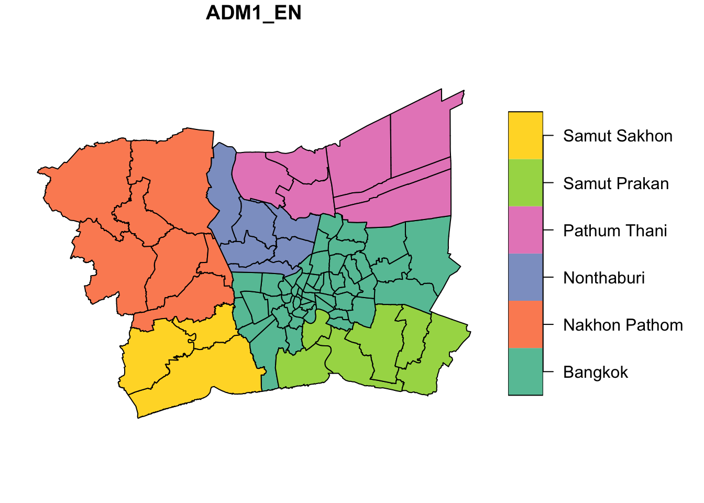
Thailand Roads (Lines) Polyline feature in shapefile form
The Thailand Roads dataset, was also imported by using st_read() package.
Then, the data was prepared for analysis with the following steps:
Filter roads to only those in BMR region by using st_intersection() with the geometries of the road data with the boundaries of the BMR region from the
boundariesdataset. Set crs to 4326 to be able to do this.Convert
MULTILINESTRINGgeometries toLINESTRINGgeometries using sf package, st_cast(). This step is because algorithms for tasks like network analysis expect individual road segments (LINESTRING), not groups of segments (MULTILINESTRING).Transform the projection to the correct ESPG code (from NA to 32647).
thairoads= st_read(dsn = "data/rawdata/",
layer = "hotosm_tha_roads_lines_shp",
crs=4326) %>%
st_transform(crs=32647)- Filter: For the purpose of this study we will focus on Intercity highway classifications made by OpenStreetMap. Therefore we filter to 5 types of highways with the following code chunk.
thairoads_highway <- thairoads %>%
filter((highway %in% c('primary', 'secondary','tertiary','motorway','trunk')))- Intersection: to find intersection with boundaries of BMR
thairoads_BMR<- st_intersection(thairoads_highway , boundaries)- Filter for only LINESTRING
thairoads_BMR<- thairoads_BMR[st_geometry_type(thairoads_BMR) == "LINESTRING", ]Save the prepared output to rds format using the same code chunk before.
write_rds(thairoads_BMR, file = "data/rds/roads.rds")roads <- read_rds("data/rds/roads.rds")Now we have Roads (specificially in bangkok) as roads. To view the data content, we will use glimpse() and ensure it is in correct coordinate system we use st_crs().
glimpse(roads)Rows: 20,286
Columns: 34
$ name <chr> "ถนนจักรเพชร", "ถนนอัษฎางค์", "ถนนราชดำเนินกลาง", "ถนนราชดำเนินก…
$ name_en <chr> "Chakkraphet Road", "Atsadang Road", "Ratchadamnoen Klang R…
$ highway <chr> "secondary", "tertiary", "primary", "primary", "tertiary", …
$ surface <chr> NA, "asphalt", "asphalt", NA, NA, "asphalt", "asphalt", "as…
$ smoothness <chr> NA, NA, NA, NA, NA, NA, NA, NA, NA, NA, NA, NA, NA, NA, NA,…
$ width <chr> NA, NA, NA, NA, NA, NA, NA, NA, NA, NA, NA, NA, NA, NA, NA,…
$ lanes <chr> NA, NA, "6", "6", NA, NA, "6", "3", NA, NA, NA, "3", NA, "6…
$ oneway <chr> "yes", "yes", "yes", "yes", "yes", "yes", "yes", "yes", "ye…
$ bridge <chr> NA, NA, NA, NA, NA, NA, NA, NA, "yes", "yes", NA, "yes", "y…
$ layer <chr> NA, NA, NA, NA, NA, NA, NA, NA, "1", "1", NA, "1", "1", NA,…
$ source <chr> NA, NA, NA, NA, NA, NA, NA, NA, NA, NA, NA, NA, NA, NA, NA,…
$ name_th <chr> "ถนนจักรเพชร", "ถนนอัษฎางค์", "ถนนราชดำเนินกลาง", "ถนนราชดำเนินก…
$ osm_id <dbl> 157690710, 157690718, 24681047, 134010893, 152825730, 15642…
$ osm_type <chr> "ways_line", "ways_line", "ways_line", "ways_line", "ways_l…
$ Shape_Leng <dbl> 0.08541733, 0.08541733, 0.08541733, 0.08541733, 0.08541733,…
$ Shape_Area <dbl> 0.0004504685, 0.0004504685, 0.0004504685, 0.0004504685, 0.0…
$ ADM2_EN <chr> "Phra Nakhon", "Phra Nakhon", "Phra Nakhon", "Phra Nakhon",…
$ ADM2_TH <chr> "พระนคร", "พระนคร", "พระนคร", "พระนคร", "พระนคร", "พระนคร",…
$ ADM2_PCODE <chr> "TH1001", "TH1001", "TH1001", "TH1001", "TH1001", "TH1001",…
$ ADM2_REF <chr> NA, NA, NA, NA, NA, NA, NA, NA, NA, NA, NA, NA, NA, NA, NA,…
$ ADM2ALT1EN <chr> NA, NA, NA, NA, NA, NA, NA, NA, NA, NA, NA, NA, NA, NA, NA,…
$ ADM2ALT2EN <chr> NA, NA, NA, NA, NA, NA, NA, NA, NA, NA, NA, NA, NA, NA, NA,…
$ ADM2ALT1TH <chr> NA, NA, NA, NA, NA, NA, NA, NA, NA, NA, NA, NA, NA, NA, NA,…
$ ADM2ALT2TH <chr> NA, NA, NA, NA, NA, NA, NA, NA, NA, NA, NA, NA, NA, NA, NA,…
$ ADM1_EN <chr> "Bangkok", "Bangkok", "Bangkok", "Bangkok", "Bangkok", "Ban…
$ ADM1_TH <chr> "กรุงเทพมหานคร", "กรุงเทพมหานคร", "กรุงเทพมหานคร", "กรุงเทพมหาน…
$ ADM1_PCODE <chr> "TH10", "TH10", "TH10", "TH10", "TH10", "TH10", "TH10", "TH…
$ ADM0_EN <chr> "Thailand", "Thailand", "Thailand", "Thailand", "Thailand",…
$ ADM0_TH <chr> "ประเทศไทย", "ประเทศไทย", "ประเทศไทย", "ประเทศไทย", "ประเทศ…
$ ADM0_PCODE <chr> "TH", "TH", "TH", "TH", "TH", "TH", "TH", "TH", "TH", "TH",…
$ date <date> 2019-02-18, 2019-02-18, 2019-02-18, 2019-02-18, 2019-02-18…
$ validOn <date> 2022-01-22, 2022-01-22, 2022-01-22, 2022-01-22, 2022-01-22…
$ validTo <date> NA, NA, NA, NA, NA, NA, NA, NA, NA, NA, NA, NA, NA, NA, NA…
$ geometry <LINESTRING [m]> LINESTRING (661650.9 151977..., LINESTRING (6616…st_crs(roads)Coordinate Reference System:
User input: EPSG:32647
wkt:
PROJCRS["WGS 84 / UTM zone 47N",
BASEGEOGCRS["WGS 84",
ENSEMBLE["World Geodetic System 1984 ensemble",
MEMBER["World Geodetic System 1984 (Transit)"],
MEMBER["World Geodetic System 1984 (G730)"],
MEMBER["World Geodetic System 1984 (G873)"],
MEMBER["World Geodetic System 1984 (G1150)"],
MEMBER["World Geodetic System 1984 (G1674)"],
MEMBER["World Geodetic System 1984 (G1762)"],
MEMBER["World Geodetic System 1984 (G2139)"],
ELLIPSOID["WGS 84",6378137,298.257223563,
LENGTHUNIT["metre",1]],
ENSEMBLEACCURACY[2.0]],
PRIMEM["Greenwich",0,
ANGLEUNIT["degree",0.0174532925199433]],
ID["EPSG",4326]],
CONVERSION["UTM zone 47N",
METHOD["Transverse Mercator",
ID["EPSG",9807]],
PARAMETER["Latitude of natural origin",0,
ANGLEUNIT["degree",0.0174532925199433],
ID["EPSG",8801]],
PARAMETER["Longitude of natural origin",99,
ANGLEUNIT["degree",0.0174532925199433],
ID["EPSG",8802]],
PARAMETER["Scale factor at natural origin",0.9996,
SCALEUNIT["unity",1],
ID["EPSG",8805]],
PARAMETER["False easting",500000,
LENGTHUNIT["metre",1],
ID["EPSG",8806]],
PARAMETER["False northing",0,
LENGTHUNIT["metre",1],
ID["EPSG",8807]]],
CS[Cartesian,2],
AXIS["(E)",east,
ORDER[1],
LENGTHUNIT["metre",1]],
AXIS["(N)",north,
ORDER[2],
LENGTHUNIT["metre",1]],
USAGE[
SCOPE["Engineering survey, topographic mapping."],
AREA["Between 96°E and 102°E, northern hemisphere between equator and 84°N, onshore and offshore. China. Indonesia. Laos. Malaysia - West Malaysia. Mongolia. Myanmar (Burma). Russian Federation. Thailand."],
BBOX[0,96,84,102]],
ID["EPSG",32647]]4 Exploratory Data Analysis (EDA)
Now that the dataframes are processed and cleaned, let’s deepen our understanding of the trend and distribution of accidents by conducting exploratory data analysis visualizing the data. Before we quantify the clusters and distributions statistically, we will use geovisualization methods to roughly uncover whether there is any seasonality to traffic accidents in BMR.
To visualize the maps, we will be using the elements of tmap() to plot choropleth maps.
4.1. Basic Choropleth Map
The first step would be to create a basic map of all our data to have a rough understanding of the distribution of our accident data without any further filtering.
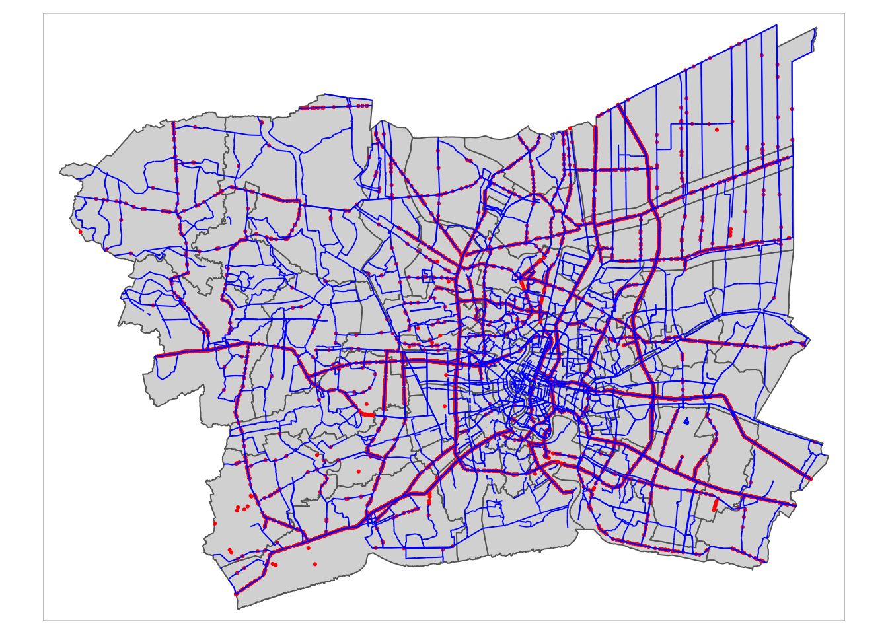
Observation:
- From the basic choropleth map, we see the accidents happen mostly along the inter city roads and constrained only to the roads. This will be used to determine the analysis method in later sections.
4.2 Accidents Over The Years
The second step would be to understand the ‘seasonality’ or trend of the accidents. To do this, let’s start by considering the bigger picture and compare the data across the years in the dataset: 2019-2022.
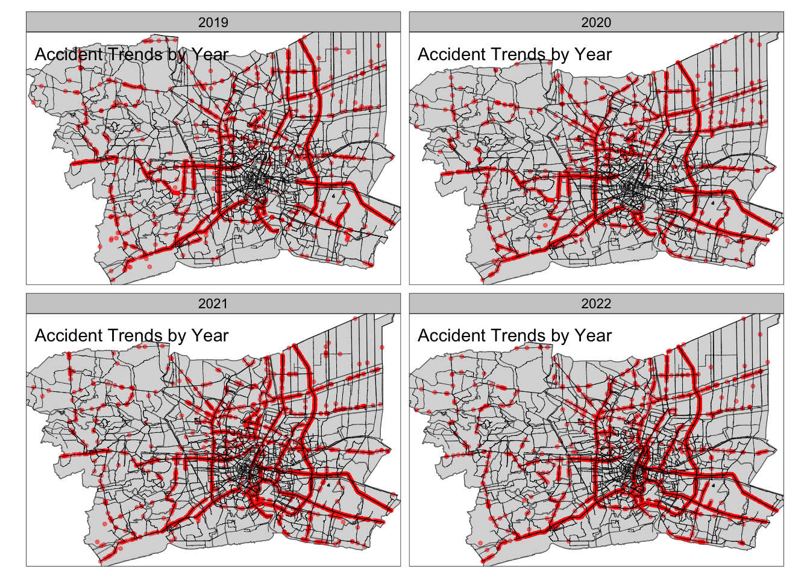
Observations:
2019:
- Accidents appear to be somewhat evenly distributed across the region, with higher concentrations in the central areas and along major roads and at key road intersections.
2020:
The number of accidents seems to have slightly increased compared to 2019, especially in the outskirts.
Central areas, however, continue to show a high density of accidents, particularly along the main roadways.
2021:
There appears to be a resurgence in accident occurrences, with accident spots becoming increasing denser, especially along the central and arterial roads.
Accidents have spread to some areas that showed lower concentrations in 2020, possibly indicating a return to normal traffic conditions post-lockdown.
2022:
Accident spots continue to increase, especially in the centrals parts of the region. Some new clusters have emerged in these areas.
Major roads that consistently showed high accident concentrations in previous years (2019-2021) continue to display similar patterns, suggesting that these routes are persistently high-risk zones. Overall, there is an increase in accident density along the main road arteries.
To check which year has the most accidents and which province has the most accidents by year, we use the following code chunk.
# A tibble: 4 × 2
year total_accidents
<fct> <int>
1 2019 2989
2 2020 3286
3 2021 3118
4 2022 3593Observations:
2022 has the highest overall accident count, with 3,593 total accidents, suggesting a general upward trend in traffic accidents, possibly due to the recovery of traffic volumes after pandemic restrictions eased.
2020 had the second-highest total accident count at 3,286, which is notable given that it was a pandemic year with lockdowns in many parts of the world. This might indicate that while travel reduced in some areas, certain regions like Bangkok continued to experience high traffic volumes and accidents.
# A tibble: 6 × 6
province_en `2019` `2020` `2021` `2022` Average
<chr> <int> <int> <int> <int> <dbl>
1 Bangkok 1422 1585 1281 1801 1522.
2 Nakhon Pathom 316 254 186 135 223.
3 Nonthaburi 154 242 256 175 207.
4 Pathum Thani 391 489 557 486 481.
5 Samut Prakan 431 486 655 669 560.
6 Samut Sakhon 275 230 183 327 254.Observations:
Bangkok consistently has the highest number of road accidents among the six provinces across all four years.
Samut Prakan shows a notable increase in accidents over the years, reaching 669 in 2022, with an average of 560.25 accidents over the four years.
Pathum Thani also has a relatively high and stable number of accidents. The number of accidents peaked in 2021 (557) but remained relatively high in 2022.
Nakhon Pathom , in particular, saw a decline in accidents, reaching a low of 135 in 2022.
Nonthaburi has the lowest level of accidents across the years.
Trends:
Most provinces, especially Bangkok, show some variability in accident numbers from year to year, with no clear continuous upward or downward trend.
Samut Prakan and Pathum Thani appear to be the provinces experiencing a more steady increase, while Nakhon Pathom’s decline stands out.
# A tibble: 5 × 6
presumed_cause Year_2019 Year_2020 Year_2021 Year_2022 Average
<chr> <int> <int> <int> <int> <dbl>
1 speeding 2439 2797 2347 2560 2536.
2 other 60 6 412 479 239.
3 cutting in closely by people/… 185 199 84 153 155.
4 vehicle equipment failure 87 101 91 86 91.2
5 falling asleep 61 35 57 68 55.2Observations:
Speeding, other, cutting in, vehicle equipment failure and falling asleep are the top 5 causee of accidents across all 4 years.
Speeding surpass the other causes by huge gap and was the top cause in 2020.
There is an increasing trend for drivers falling asleep.
4.3 Accidents Over The Months
Now we will narrow it down further to months and compare the data across the different months in the dataset. For instance, Januarys from all 4 years, Februarys from all 4 years and and so on.
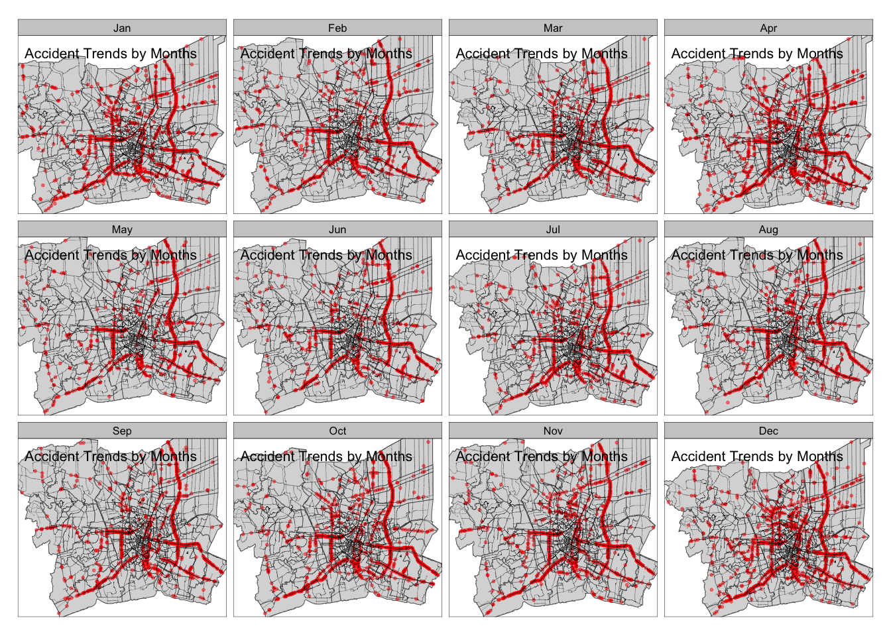
Observations:
Peak Accidents: In the months of July to December, there appear to be more road accidents based on the concentration of red dots. These months seem to have higher traffic incidents.
Low Accidents: June appear to have fewer accidents compared to other months. This could be influenced by seasonal factors, holidays, or road conditions.
Even Distribution: There seems to be a relatively even spread of accidents throughout the central regions in the Bangkok Metropolitan Region (BMR) across months, but some key roads consistently show higher accidents regardless of the month.
Temporal Pattern: While some months like Feb and May show a moderate number of accidents, there isn’t a strong pattern indicating drastic month-on-month changes outside the aforementioned peaks.
To check which month has the most accidents and which province has the most accidents by year, we utilize the following code chunk.
# A tibble: 12 × 2
Month_factor total_accidents
<ord> <int>
1 Jan 1149
2 Feb 963
3 Mar 1023
4 Apr 1266
5 May 909
6 Jun 878
7 Jul 1022
8 Aug 1048
9 Sep 1038
10 Oct 1263
11 Nov 1084
12 Dec 1343Observations:
December has the highest number of accidents with 1,343 recorded incidents, which could be related to holiday traffic or weather conditions during this month.
April is the second-highest month for accidents, with 1,266 incidents, suggesting a possible seasonal trend or specific events contributing to higher traffic risks.
May and June have the lowest accident counts, with 909 and 878 incidents, respectively, which might indicate a relatively safer period or less traffic activity during these months.
There’s a steady increase in accidents from June to December, showing a rising trend after the mid-year point.
February has the second-lowest accident count (963), despite being one of the shorter months, suggesting a quieter traffic period or other factors like lower travel demand.
# A tibble: 12 × 6
Month_factor Year_2019 Year_2020 Year_2021 Year_2022 Average
<ord> <dbl> <dbl> <dbl> <dbl> <dbl>
1 Jan 23 24 25 17 22.2
2 Feb 7 19 15 8 12.2
3 Mar 5 10 18 17 12.5
4 Apr 33 27 32 21 28.2
5 May 5 18 14 8 11.2
6 Jun 11 8 11 5 8.75
7 Jul 8 23 12 27 17.5
8 Aug 11 15 18 9 13.2
9 Sep 21 21 10 7 14.8
10 Oct 18 21 26 17 20.5
11 Nov 13 17 21 15 16.5
12 Dec 34 28 25 25 28 Observations:
Seasonal Variation in Fatalities:
Winter Months: December and January shows relatively high fatalities in 2019 and 2020 but a decrease in 2021 and 2022.
Summer Months: July and August have higher fatalities in most years, with July showing a peak in 2022.
Yearly Trends:
2019: Fatalities were relatively high across most months with notable peaks in January, April, and December.
2020: There was a noticeable decrease in fatalities in May and June compared to other years, possibly due to the COVID-19 pandemic affecting travel patterns.
2021: There was a peak in fatalities in April and October, with an increase in summer months like August.
2022: Peaks are observed in July, April, and December.
Month-to-Month Variation:
April and December: Consistently has high fatalities across all years, suggesting it might be a particularly hazardous month or have specific contributing factors.
May and June: Generally have lower fatalities compared to other summer months.
General Observations:
Consistency: Some months like January, April, and October consistently show higher fatalities, indicating that these months might be more prone to accidents or have higher traffic volumes.
Anomalies: Significant year-to-year fluctuations in certain months suggest potential external factors influencing fatality rates, such as policy changes, environmental factors, or unusual events.
To understand the weather conditions(seasons) and intensity of the weather, we will visualize the fatalities by weather conditions grouped by months.
# A tibble: 12 × 9
Month_factor clear dark foggy other rainy `land slide` `natural disaster`
<ord> <dbl> <dbl> <dbl> <dbl> <dbl> <dbl> <dbl>
1 Jan 79 2 0 1 7 0 0
2 Feb 40 8 0 0 1 0 0
3 Mar 48 2 0 0 0 0 0
4 Apr 106 2 0 0 5 0 0
5 May 39 6 0 0 0 0 0
6 Jun 31 1 0 0 1 2 0
7 Jul 60 6 0 1 3 0 0
8 Aug 41 1 0 0 11 0 0
9 Sep 49 0 0 0 10 0 0
10 Oct 74 0 0 1 7 0 0
11 Nov 59 1 0 0 6 0 0
12 Dec 102 9 0 1 0 0 0
# ℹ 1 more variable: Average <dbl>Observations:
Clear Weather:
The highest number of accidents occur during clear weather conditions, with a significant spike in April (106) and December (102).
The lowest number of accidents in clear weather occur in June (31), followed by February (40) and May (39).
Overall, clear weather is the dominant condition for accidents across all months.
Dark Conditions: Accidents during dark conditions are relatively low.
Foggy Conditions: There are no recorded accidents during foggy conditions across all months, indicating that foggy weather may not be a major factor in accident occurrences in this dataset.
Other Conditions: “Other” weather conditions are rare.
Rainy Conditions: Accidents during rainy weather show occasional peaks, with August (11) and September (10) having the highest counts, suggesting that these months are monsoon season in BMR.
Land Slides: There are only two recorded incidents involving accidents due to landslides, both in June. This suggests that landslides are an extremely rare event affecting accidents.
Natural Disasters: No accidents were reported as being caused by natural disasters throughout the year, showing that such extreme events do not contribute to the road accident statistics in this dataset.
Monthly Patterns:
April and December stand out as the months with the highest average number of accidents across all weather conditions (averages of 16.14 and 16.00, respectively), driven largely by the high number of accidents in clear weather.
June has the lowest overall accident average (5.00), followed closely by May (6.43) and February (7.00).
4.4 Accidents Over The Day of Weeks
We will narrow it down even further to weeks and compare the data across the different day of the week in the dataset. For instance, Mondays vs Tuesdays vs Wednesdays and so on.
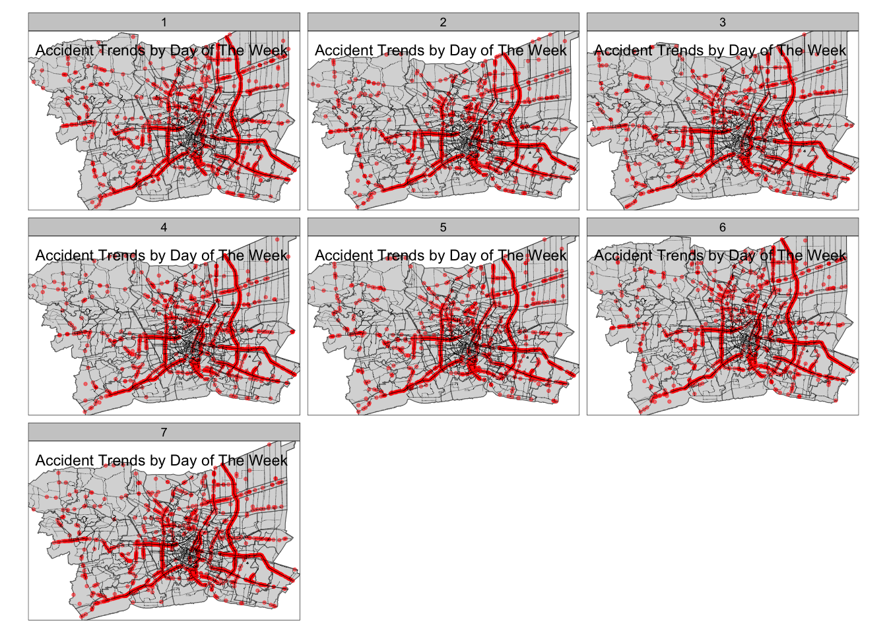
Observations:
Peak Days: Friday, Saturday and Sunday have higher accident rates, especially on major roads that show more concentrated red dots, suggesting higher traffic volume on weekends.
Low Days: Wednesday and Thursday seem to have lower accident rates compared to weekdays. The reduced concentration of red dots on weekends indicates a possible decline in road usage or traffic incidents.
Consistent Roads: Major roads across BMR see consistent accident patterns across all days of the week, with higher concentrations on specific routes.
# A tibble: 7 × 2
dayofweek total_accidents
<dbl> <int>
1 1 1788
2 2 1813
3 3 1774
4 4 1745
5 5 1753
6 6 2061
7 7 2052Observations:
Friday has the highest number of accidents with 2,061 incidents, suggesting that the end of the workweek may lead to riskier road behavior, increased traffic, or longer driving times. This could be influenced by people commuting, attending social events, or engaging in weekend travel.
Saturday closely follows Friday with 2,052 accidents, reflecting that weekends, in general, experience higher accident rates. Increased leisure activities, social gatherings, and more relaxed driving attitudes may contribute to this spike.
Monday also has a relatively high accident count, with 1,813 accidents, possibly linked to the start of the workweek when people may be rushing to get to work or adjusting back to routine schedules after the weekend.
Sunday, while part of the weekend, has fewer accidents compared to Friday and Saturday, with 1,788 accidents. This could be because fewer people commute on Sundays, or the day is more relaxed in terms of activities.
Wednesday has the lowest accident count at 1,745 accidents, suggesting it might be a more routine day with less aggressive driving or fewer high-risk traffic situations compared to the other days.
Accident rates are fairly consistent from Sunday to Thursday, with numbers ranging from 1,745 to 1,813 accidents, showing that accidents occur steadily throughout the week but spike significantly on Fridays and Saturdays.
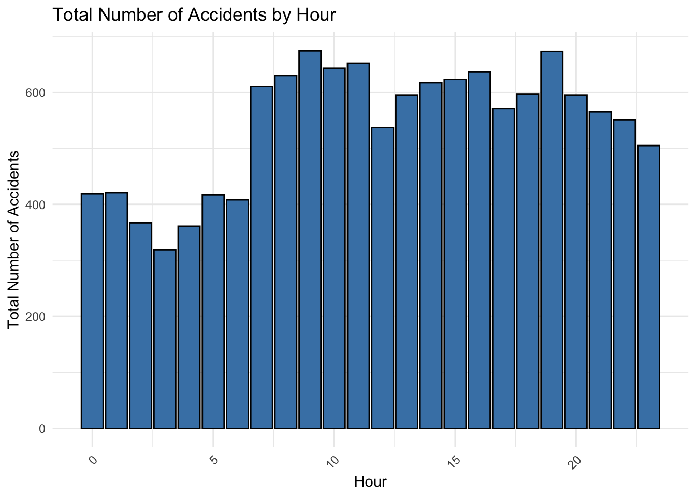
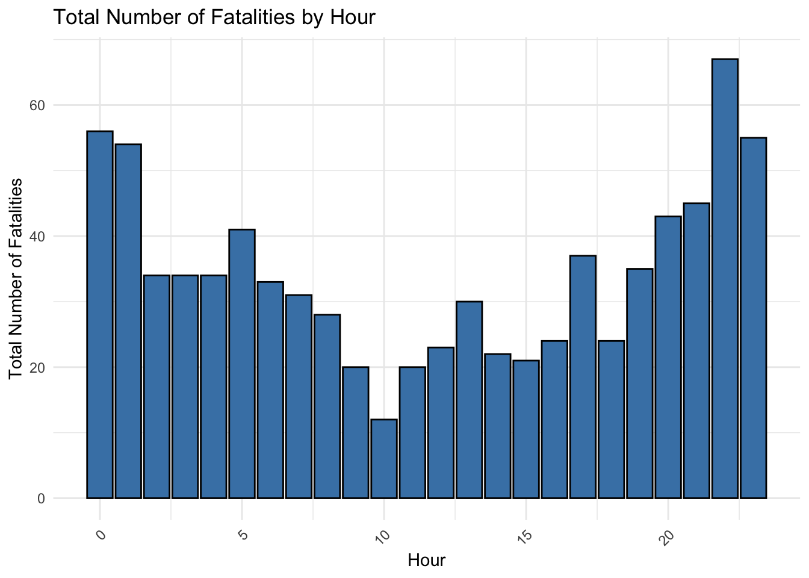
Observations:
Common Peak Hours:
19:00 (7 PM): This time of day consistently shows high accident numbers on Sunday and Friday, indicating increased activity or potential risk factors during these hours on these days.
09:00 (9 AM): This hour is a peak time on Tuesday and Wednesday, which might correlate with morning rush hours or increased traffic.
22:00 (10 PM) - 01:00 (1 AM): This period has the highest fatalities from traffic accidents.
Highest number of accidents does not mean highest number of fatalities as we can see that morning has the most number of accidents by least number of fatalities.
Variability Across Days:
Monday through Wednesday: Peak accident times are early in the morning (08:00 and 09:00), suggesting that morning rush hour or commuting patterns could be contributing factors.
Thursday: Shows a peak later in the morning (10:00), which is less consistent with the earlier part of the week.
Saturday: Has two peak times, indicating that accidents could be spread throughout the day, possibly due to varied activities on weekends.
General Trends:
- Weekdays vs. Weekends: Weekdays show peak hours generally earlier in the day, while weekends have peaks spread out later into the day. This could reflect different patterns of road usage and traffic behavior on weekends versus weekdays.
4.5 Accidents Over Weather Conditions
Lastly, we analyze which weather condition leads to the most accidents as it also answers the question of when. When the weather condition is rainy or clear or dark, are there more clusters of accidents?
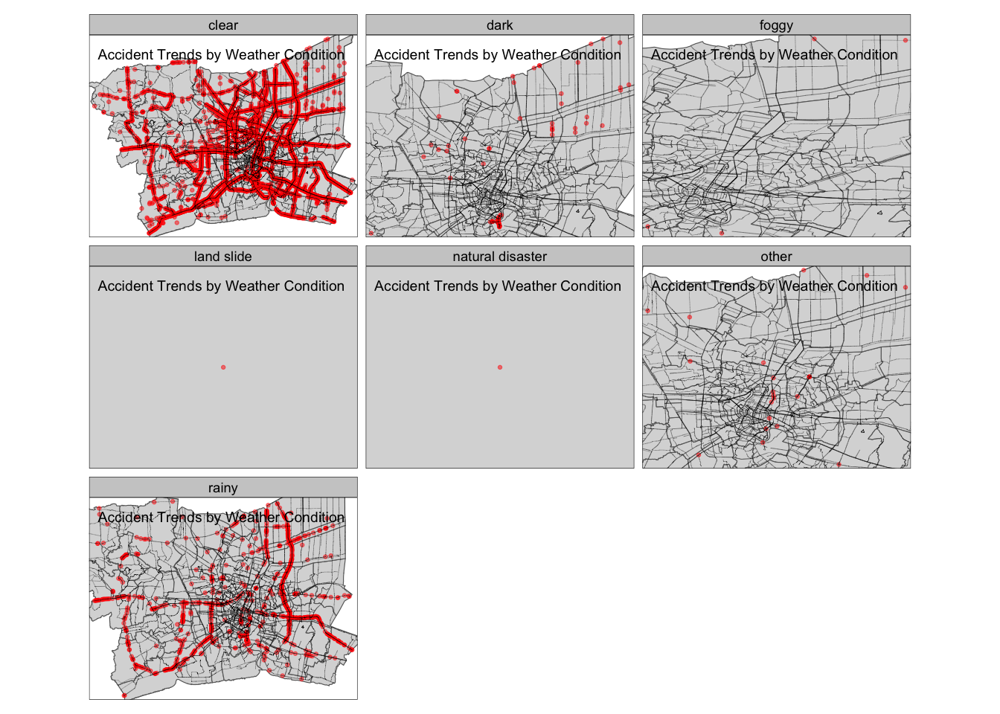
Observations:
Most traffic accidents occur during clear or rainy weather conditions
Accident due to dark or foggy weather conditions are noted to be more on the outskirts of the BMR region.
4.6 Accidents by Road Description
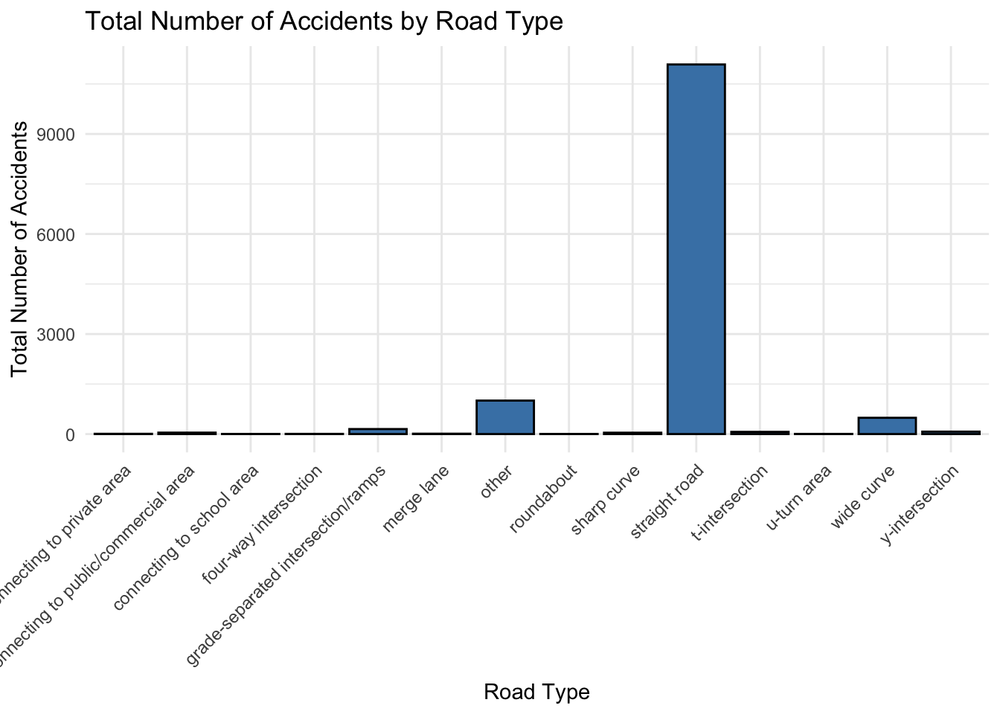
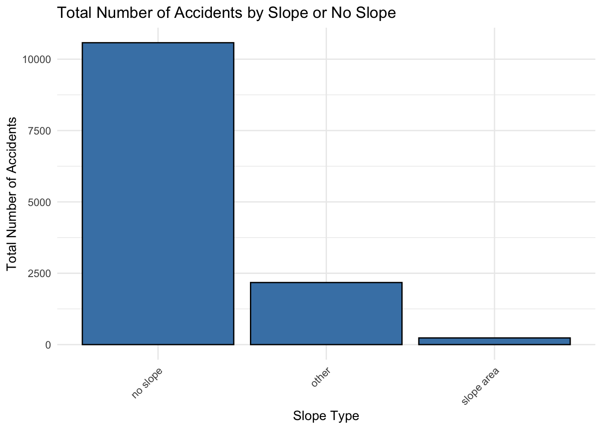
Observations:
- Straight roads and wide curve roads with no slope contribute to the highest number of accidents, which may also imply that BMR might have more straight roads with no slopes.
4.7 Fatalities
Lastly, we will analyze the fatalities.
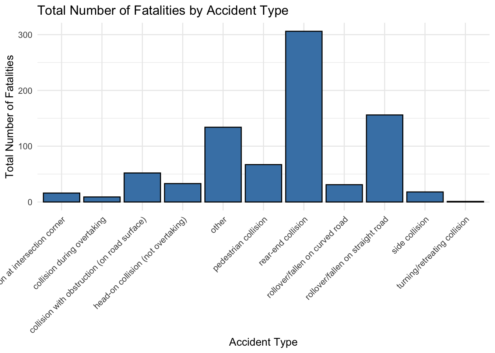
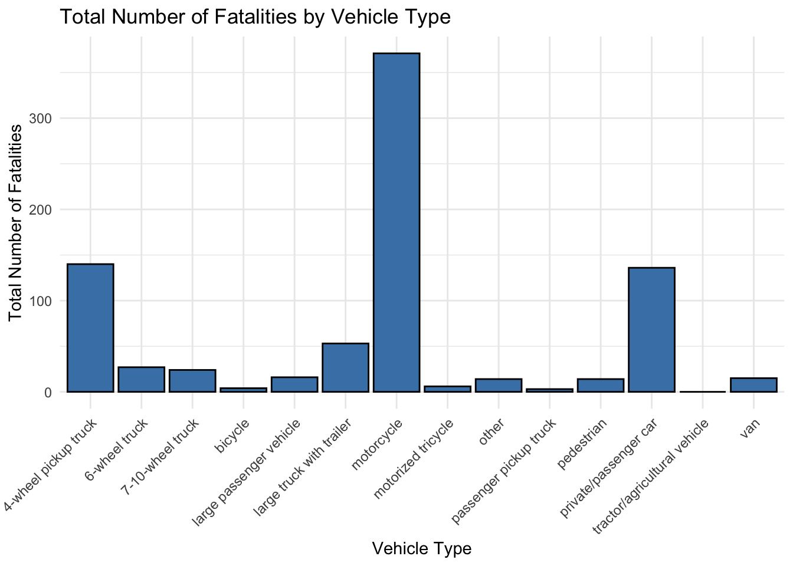
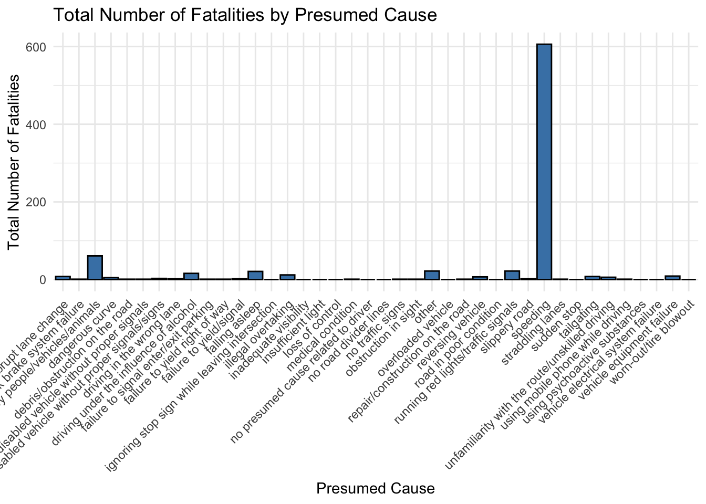
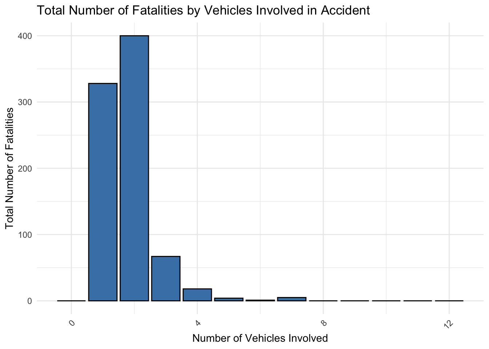
Observations:
- The predominance of straight roads in the Bangkok Metropolitan Region (BMR) likely contributes to the high incidence of rollover accidents on straight stretches, which are a leading cause of fatalities.
- Rear-end collisions stand out as the top accident type with fatalities.
- Motorcycles are the most significant contributors to fatalities, followed by private cars.
- Speeding remains the primary factor behind fatal accidents.
- Fatalities are highest in accidents involving two vehicles. However, single-vehicle accidents account for the second-highest number of fatalities, suggesting instances where vehicles either collided with stationary objects or overturned.
5 Spatial Point Pattern Analysis
In this section, we will conduct a Spatial Point Pattern Analysis (SPPA) to evaluate and quantify the spatial distribution of road traffic accidents in the Bangkok Metropolitan Region (BMR) that we visualized in section 4. By applying the spatstat package, we aim to uncover key insights into the spatial processes governing the occurrence of traffic accidents in the region.
The core questions we seek to address here include:
Are traffic accidents in the BMR randomly distributed throughout the region?
If the distribution is not random, where are the areas with higher concentrations of accidents?
5.1 Analysis Methods Overview
Spatial Point Pattern Analysis (SPPA) is a method used to investigate the spatial arrangement of events—in this case, road accidents—within BMR. This technique evaluates whether the observed points (accidents) follow a random distribution, exhibit clustering, or show a regular pattern. To address our questions, we will examine the Complete Spatial Randomness (CSR) hypothesis, which assumes that accidents occur independently and are uniformly distributed across the region.
For a comprehensive analysis, we will apply three SPPA methods:
First-Order SPPA: First-Order SPPA identifies spatial trends in accident intensity across the region, focusing on broader patterns. Techniques such as Kernel Density Estimation (KDE) will be used to create a smooth surface representing accident density, highlighting “hot spots” where accidents are more frequent. We also will calculate Nearest Neighbor Distance (NND) to assesses how close each accident point is to its nearest neighbor, indicating potential clustering or regularity in accident occurrence.
Second-Order SPPA: In this section, we will employ statistical tools such as the Ripley’s K-function, along with the G, L, and F functions. These techniques allow us to assess spatial dependence at varying distances:
Ripley’s K-function measures how the number of points within a certain distance of each other compares to what would be expected under complete spatial randomness (CSR). It is useful for detecting clustering or regularity at multiple scales.
The G-function analyzes the distribution of the distances from each accident point to its nearest neighbor, offering insights into local clustering.
The F-function evaluates the distribution of distances from random locations in the study area to the nearest accident point, providing a complementary view of point proximity.
The L-function is a transformed version of Ripley’s K-function, making it easier to interpret clustering or dispersion by linearizing the results.
Network-Constrained Spatial Point Pattern Analysis: In addition to standard spatial analysis, we will also apply Network-Constrained SPPA, which evaluates accident patterns specifically along road networks. Unlike traditional SPPA, which assumes accidents can occur anywhere within a region, Network-Constrained SPPA accounts for the fact that accidents are constrained to occur on roadways which was one of our findings in above section. This method provides a more realistic understanding of accident clustering by analyzing patterns along the network of roads in the Bangkok Metropolitan Region.
Together, these approaches will provide a thorough understanding of the spatial processes underlying road accidents, allowing us to identify not only broad regional trends but also specific locations of risk and clustering.
5.2 Converting Data to Spatial
Before we begin our analysis, we must convert the our data to ppp since we will perform advanced point pattern analysis using the spatstat package. We begin by converting the sf dataframes to Spatial class.
accidents_spatial <- as_Spatial(accidents)
boundaries_spatial <-as_Spatial(boundaries)
roads_spatial <- as_Spatial(roads)Then we convert this spatial class into generic sp format.
accidents_sp <- as(accidents_spatial, "SpatialPoints")
boundaries_sp <-as(boundaries_spatial, "SpatialPolygons")We must convert the generic sp format of accidents data into spatstat’s ppp format.
accidents_ppp <- as.ppp(accidents)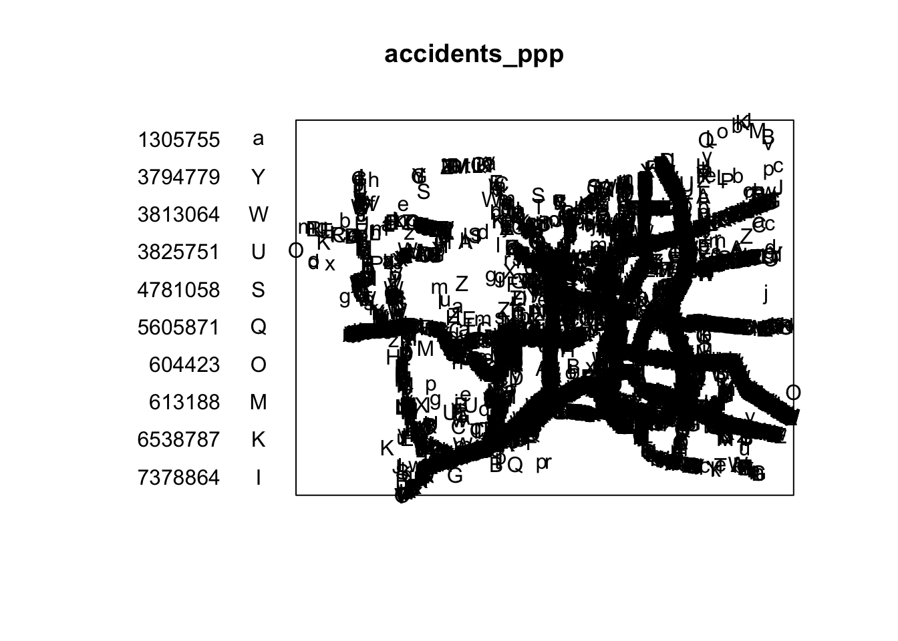
summary(accidents_ppp)Marked planar point pattern: 12986 points
Average intensity 1.218049e-06 points per square unit
Coordinates are given to 10 decimal places
marks are of type 'character'
Summary:
Length Class Mode
12986 character character
Window: rectangle = [591277.5, 710166.1] x [1486845.7, 1576520.5] units
(118900 x 89670 units)
Window area = 10661300000 square unitsThen, the following code was used to ensure there are no duplicate points.
any(duplicated(accidents_ppp))[1] FALSEsum(multiplicity(accidents_ppp)>1)[1] 0We can now confirm that there is no duplicate point events.
We must also confine the analysis with a geographical area with the boundary data by converting boundaries polygon to an owin object from the spatstat package.
bmr_owin <- as.owin(boundaries)#|echo: False
plot(bmr_owin)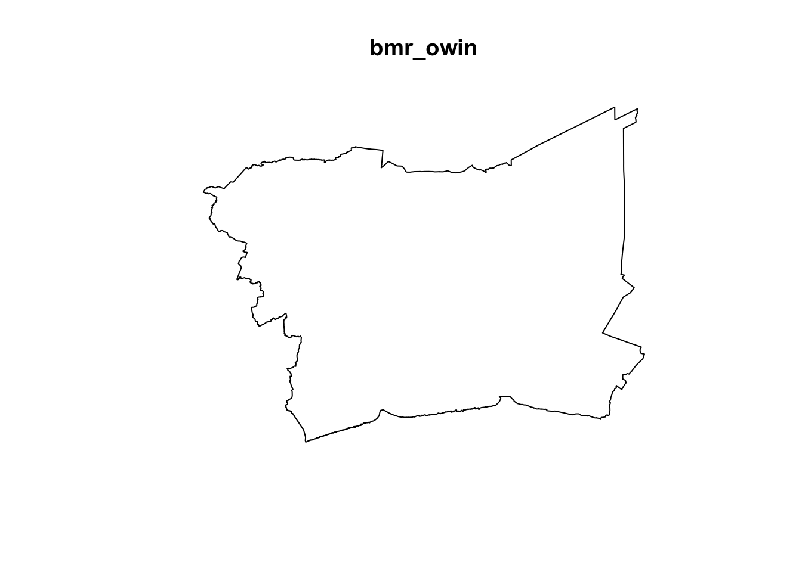
Lastly, we combine the point events and owin object and now our data is ready to conduct spatial analysis.
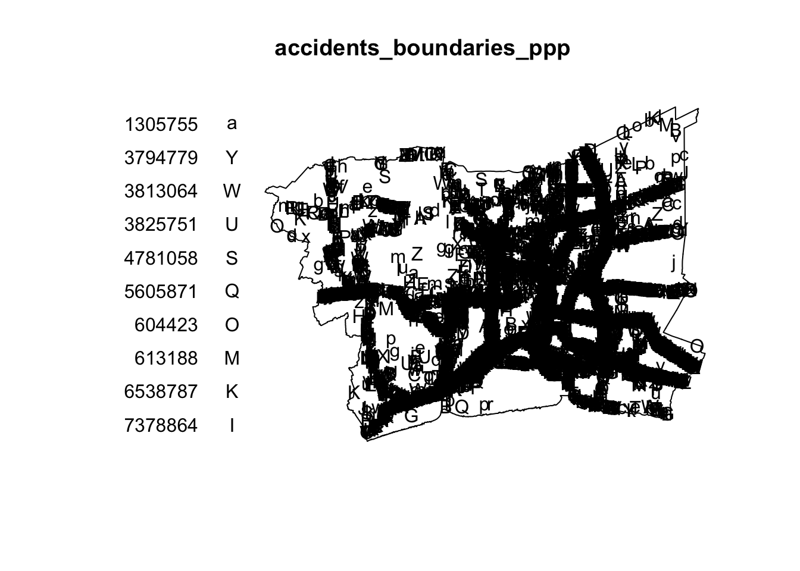
5.3 First Order Spatial Point Pattern Analysis
The First-Order SPPA focuses on identifying spatial trends in the intensity of accidents across the study area. This method estimates the variation in the occurrence of accidents across different locations, determining if there are areas with consistently higher or lower accident rates. In this section, we will derive a Kernel Density Estimation (KDE) layer to visualize and explore the intensity of point processes, creating a smooth, continuous surface that highlights accident density.
Additionally, we will perform Confirmatory Spatial Point Pattern Analysis using Nearest Neighbor Statistics to validate whether the observed patterns deviate significantly from randomness. This combination of exploratory KDE and confirmatory Nearest Neighbor analysis will help us uncover broad regional trends and identify high-accident areas, often influenced by factors such as road infrastructure, traffic flow, or urban density. The goal of First-Order SPPA is to reveal these patterns and guide future interventions for traffic safety improvements.
5.3.1 Kernel Density Estimation
Kernel Density Estimation (KDE) is a non-parametric method used to estimate the probability density function of a set of points, like road accidents, across a defined area. It creates a smooth, continuous surface by calculating the concentration of points within a specified bandwidth, helping to visualize areas of higher and lower intensity. KDE allows us to identify hot spots—areas with high concentrations of accidents—and visualize spatial variations in accident density across the Bangkok Metropolitan Region (BMR).
We compute the Kernel Density Estimation(KDE) of traffic accidents with the following code:
kde_accidents <- density(accidents_ppp, sigma = bw.diggle,edge=TRUE,kernel='gaussian')We used the density() function from the spatstat package to perform Kernel Density Estimation (KDE) on the accident data. The bandwidth for the estimation was determined using bw.diggle(), which selects an optimal bandwidth value for the kernel function. The KDE was computed with a Gaussian kernel, and the intensity estimate was adjusted for edge effects by setting edge = TRUE, ensuring that the density estimation accounts for the boundaries of the study area.
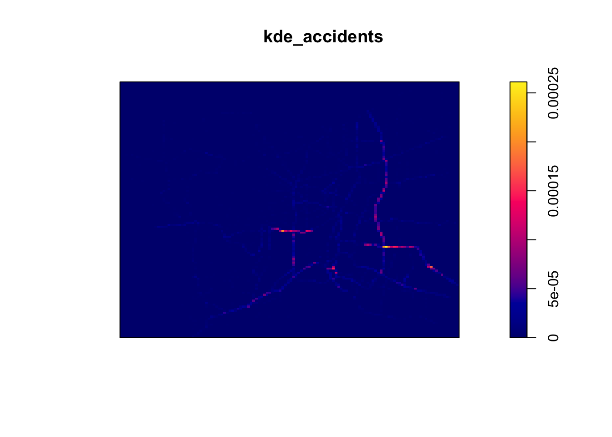
When viewing the plot of kde_accidents plot, we note that the density values of this range is very small. By default, the unit of measurement of WGS84 is in meter. We will rescale the KDE values to kilometer and run density() again.
accidents_ppp_km <- rescale(accidents_ppp, s = 1000, unitname = "km")kde_accidents_bw_km <- density(accidents_ppp_km, sigma = bw.diggle,edge=TRUE,kernel='gaussian')
plot(kde_accidents_bw_km)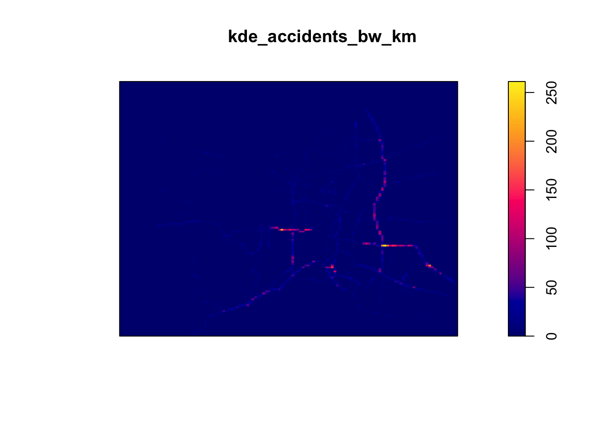
#|echo: False
kde_accidents_ppl_km <- density(accidents_ppp_km,sigma=bw.ppl,edge=TRUE,kernel="gaussian")
par(mfrow=c(1,2))
plot(kde_accidents_bw_km,main="bw.diggle")
plot(kde_accidents_ppl_km,main="bw.ppl")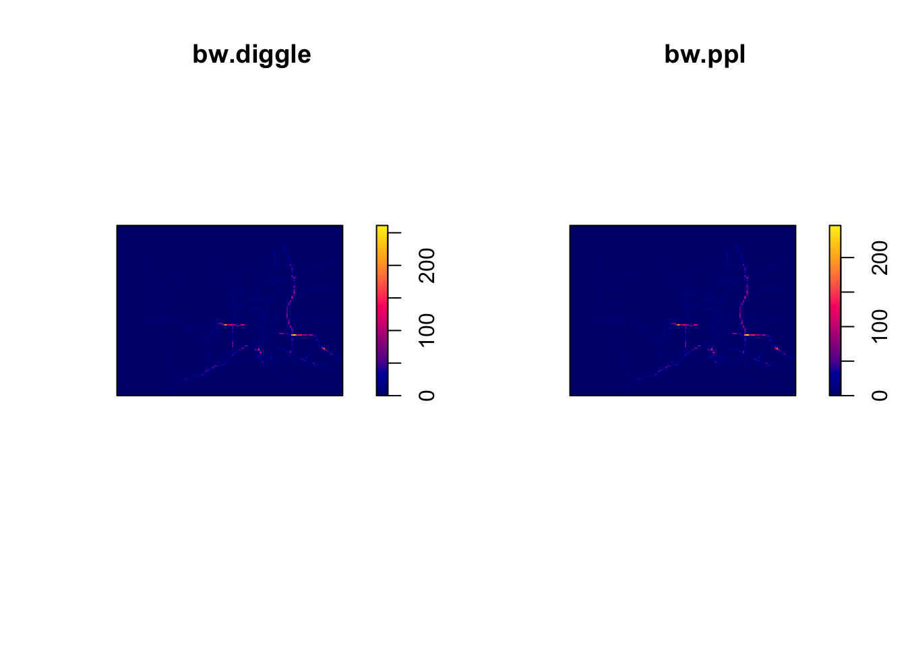
When reviewing both plots, we can see that both techniques are very similar.
For road accident data in a region like the BMR, the optimal fixed bandwidth should capture local variations in accident density while still showing broader trends. A smaller bandwidth may reveal small clusters, whereas a larger bandwidth highlights more general trends. Since bw.diggle() already accounts for the spatial distribution of points, it’s often a good choice for real-world data like this. After testing with fixed and adaptive bandwidths, we concluded that bw.diggle() is our best option because it considers the point distribution and select a bandwidth that balances smoothness and detail, avoiding over-smoothing (losing detail) or under-smoothing (introducing noise).
To continue, we will convert the chosen KDE output into grid object so that it is suitable for mapping purposes.
gridded_kde_accidents <- as(kde_accidents_bw_km,"SpatialGridDataFrame")
spplot(gridded_kde_accidents)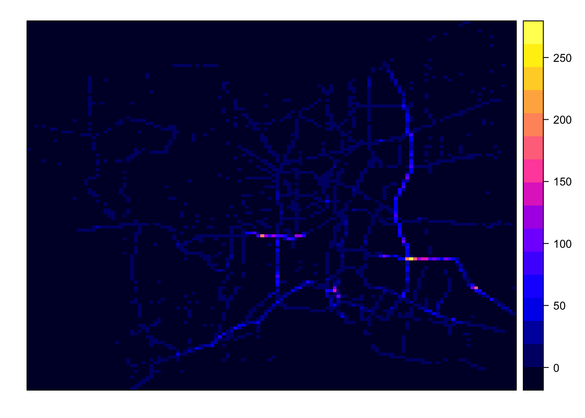
From the gridded plot above, we can now clearly see the density of accidents on the roads. The highest density seem to be located in Bangkok and Samut Prakan provinces. Since our goal for spatial analysis is to answer where are the areas with higher concentrations of accidents ,we will further break down into the 6 different provinces.
First we filter out each of the 6 provinces into different sf for comparison.
bkk <- boundaries %>%
filter(ADM1_EN == "Bangkok")
np <- boundaries %>%
filter(ADM1_EN == "Nakhon Pathom")
ntb <- boundaries %>%
filter(ADM1_EN == "Nonthaburi")
pt <- boundaries %>%
filter(ADM1_EN == "Pathum Thani")
sp <- boundaries %>%
filter(ADM1_EN == "Samut Prakan")
ss <- boundaries %>%
filter(ADM1_EN == "Samut Sakhon")Then in the same way as we did for the whole accident sf, we convert it to owin object to be compatable with spatstat.
bkk_owin = as.owin(bkk)
np_owin = as.owin(np)
ntb_owin = as.owin(ntb)
pt_owin = as.owin(pt)
sp_owin = as.owin(sp)
ss_owin = as.owin(ss)Then we will extract accident points that are within the specific region to do our analysis by using this code chunk below.
accidents_bkk_ppp = accidents_ppp[bkk_owin]
accidents_np_ppp = accidents_ppp[np_owin]
accidents_ntb_ppp = accidents_ppp[ntb_owin]
accidents_pt_ppp = accidents_ppp[pt_owin]
accidents_sp_ppp = accidents_ppp[sp_owin]
accidents_ss_ppp = accidents_ppp[ss_owin]accidents_bkk_ppp_km = rescale.ppp(accidents_bkk_ppp, 1000, "km")
accidents_np_ppp_km = rescale.ppp(accidents_np_ppp, 1000, "km")
accidents_ntb_ppp_km = rescale.ppp(accidents_ntb_ppp, 1000, "km")
accidents_pt_ppp_km = rescale.ppp(accidents_pt_ppp, 1000, "km")
accidents_sp_ppp_km = rescale.ppp(accidents_sp_ppp, 1000, "km")
accidents_ss_ppp_km = rescale.ppp(accidents_ss_ppp, 1000, "km")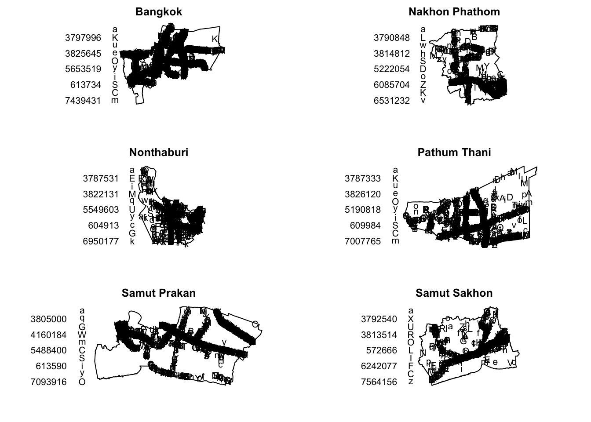
Finally, we compute and plot the KDE of these 6 provinces using bw.diggle method.
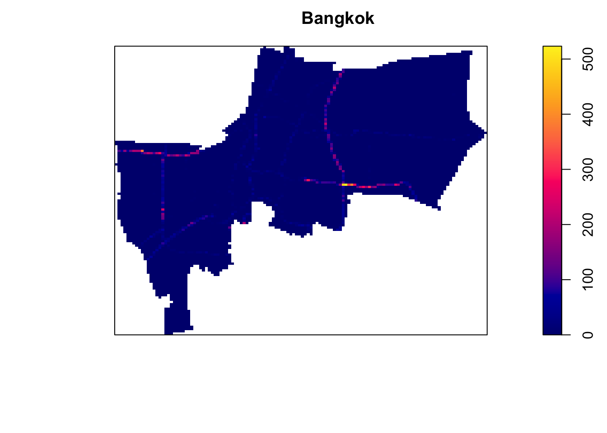
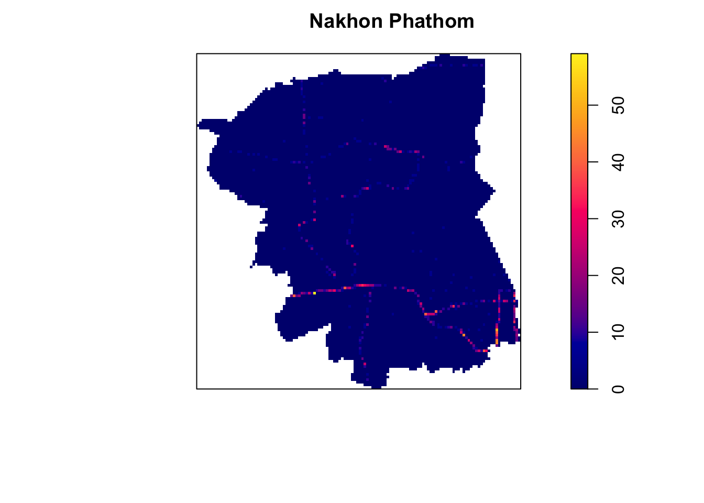
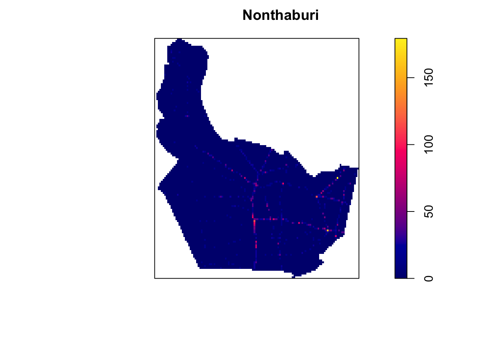
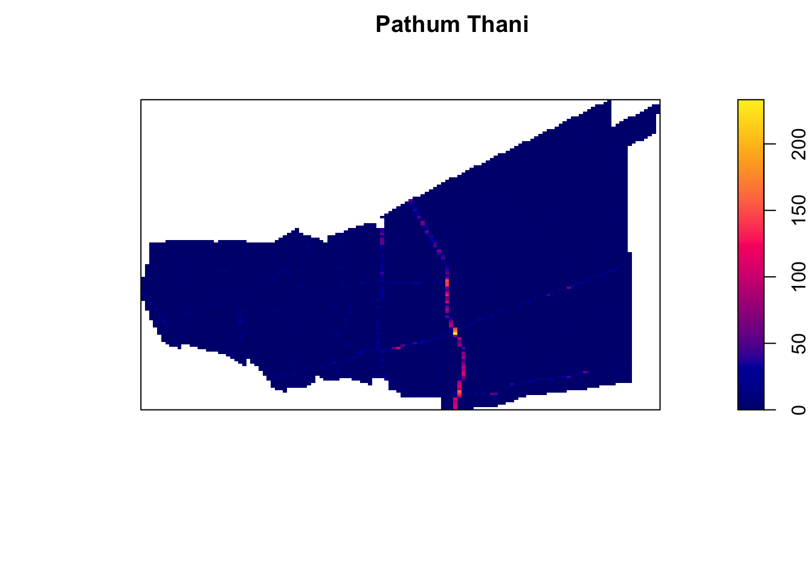
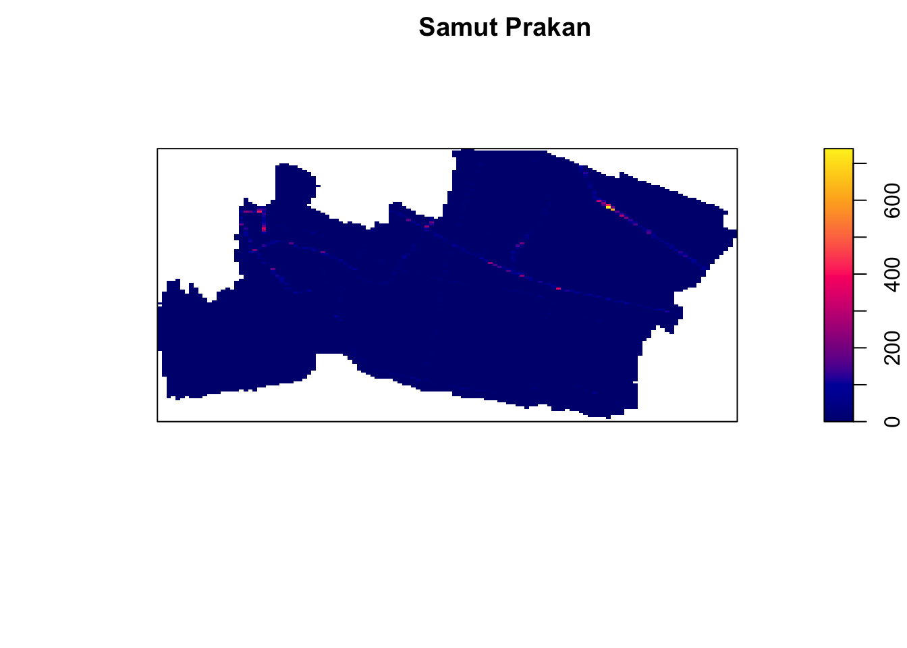
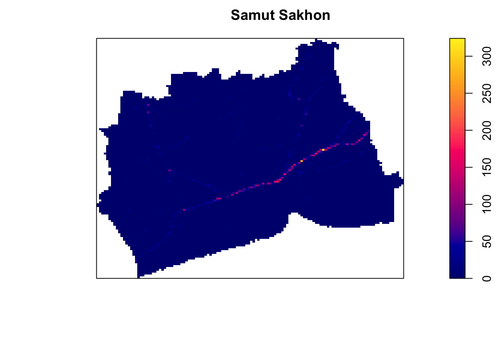
Observations:
- Bangkok and Samut Prakan have some of the highest Kernel Density Estimates (KDE) of accidents, with values reaching 500 and 600, respectively.
- Every province has at least one major highway that traverses the region, exhibiting the highest KDE for accidents.
- Nakhon Pathom and Nonthaburi show the lowest KDE values among the six provinces. However, both of these provinces have multiple clusters of accidents with an equal density while the other 4 provinces only has one main road with high density accident. This broader distribution of accident hotspots might suggest more localized traffic issues or risky road segments scattered throughout the provinces, as opposed to a dominant accident-prone highway. It could also indicate that these areas have a more intricate road network or urban structure, leading to accidents being spread across various roads rather than focused on a singular, high-traffic route.
5.3.2 Nearest Neighbour Analysis
After performing Kernel Density Estimation (KDE) to visualize the spatial distribution of traffic accidents, it is crucial to conduct the Clark-Evans test to statistically evaluate the nature of this distribution. While KDE provides a smooth, visual representation of accident density, it does not confirm whether the observed patterns are statistically significant or if they arise by chance. The Clark-Evans test offers a formal statistical assessment of spatial randomness by comparing the observed distribution of accidents to a theoretically random distribution. This test helps determine whether the clustering observed in the KDE maps is statistically significant or if the patterns could occur due to random variation, providing a robust analysis of spatial patterns.
To do this, we use clarkevans.test() of statspat.
The test hypotheses are:
Ho = The distribution of traffic accidents are randomly distributed.
H1= The distribution of traffic accidents are not randomly distributed.
The 95% confident interval will be used.
clarkevans.test(accidents_ppp_km,
correction="none",
clipregion="bmr_owin",
alternative=c("clustered"),
nsim=99)
Clark-Evans test
No edge correction
Z-test
data: accidents_ppp_km
R = 0.16207, p-value < 2.2e-16
alternative hypothesis: clustered (R < 1)Based on the results of the Clark-Evans test for spatial randomness:
R value (R = 0.16207): The observed R value is much less than 1. This indicates a clustered pattern of traffic accidents, meaning that accidents tend to occur in close proximity to one another rather than being randomly distributed across the study area.
p-value (< 2.2e-16): The p-value is extremely small (much less than 0.05), meaning that the null hypothesis (H₀) — that the accidents are randomly distributed — can be rejected with strong confidence.
Conclusion: Since the p-value is significantly smaller than 0.05 and the R value is less than 1, we reject the null hypothesis (H₀) and accept the alternative hypothesis (H₁). This means that the traffic accidents in the BMR (as a whole) are not randomly distributed and instead exhibit a clustered spatial pattern.
We narrow down our nearest neighbour analysis by provinces.
#|echo: False
clarkevans.test(accidents_bkk_ppp_km,
correction="none",
clipregion=NULL,
alternative=c("two.sided"),
nsim=999)
Clark-Evans test
No edge correction
Z-test
data: accidents_bkk_ppp_km
R = 0.12115, p-value < 2.2e-16
alternative hypothesis: two-sided#|echo: False
clarkevans.test(accidents_np_ppp_km,
correction="none",
clipregion=NULL,
alternative=c("two.sided"),
nsim=999)
Clark-Evans test
No edge correction
Z-test
data: accidents_np_ppp_km
R = 0.28949, p-value < 2.2e-16
alternative hypothesis: two-sided#|echo: False
clarkevans.test(accidents_ntb_ppp_km,
correction="none",
clipregion=NULL,
alternative=c("two.sided"),
nsim=999)
Clark-Evans test
No edge correction
Z-test
data: accidents_ntb_ppp_km
R = 0.38919, p-value < 2.2e-16
alternative hypothesis: two-sided#|echo: False
clarkevans.test(accidents_pt_ppp_km,
correction="none",
clipregion=NULL,
alternative=c("two.sided"),
nsim=999)
Clark-Evans test
No edge correction
Z-test
data: accidents_pt_ppp_km
R = 0.24798, p-value < 2.2e-16
alternative hypothesis: two-sided#|echo: False
clarkevans.test(accidents_sp_ppp_km,
correction="none",
clipregion=NULL,
alternative=c("two.sided"),
nsim=999)
Clark-Evans test
No edge correction
Z-test
data: accidents_sp_ppp_km
R = 0.14367, p-value < 2.2e-16
alternative hypothesis: two-sided#|echo: False
clarkevans.test(accidents_ss_ppp_km,
correction="none",
clipregion=NULL,
alternative=c("two.sided"),
nsim=999)
Clark-Evans test
No edge correction
Z-test
data: accidents_ss_ppp_km
R = 0.23989, p-value < 2.2e-16
alternative hypothesis: two-sidedThe following are the conclusions and the decision on the null hypothesis for each region:
Bangkok: The traffic accidents are highly clustered (R = 0.12115, p < 2.2e-16). We reject the null hypothesis.
Nakhon Pathom: The traffic accidents are clustered (R = 0.28949, p < 2.2e-16). We reject the null hypothesis.
Nonthaburi: The traffic accidents are clustered (R = 0.38919, p < 2.2e-16). We reject the null hypothesis.
Pathum Thani: The traffic accidents are clustered (R = 0.24798, p < 2.2e-16). We reject the null hypothesis.
Samut Prakan: The traffic accidents are highly clustered (R = 0.14367, p < 2.2e-16). We reject the null hypothesis.
Samut Sakhon: The traffic accidents are clustered (R = 0.23989, p < 2.2e-16). We reject the null hypothesis.
In all regions, the null hypothesis of random distribution is rejected, indicating a clustered pattern of traffic accidents.
5.4 Second Order Spatial Point Pattern Analysis
The Second-Order SPPA examines the relationships between individual accident points and analyzes how points interact with one another. This method seeks to determine whether accidents are spatially clustered, randomly distributed, or exhibit regular spacing by studying the distances between accidents.
In this section, we will employ statistical tools such as Ripley’s K-function, G , F and L function. These techniques help us understand the degree of spatial dependence between accidents. Specifically, they allow us to assess whether accidents are more likely to occur near each other (clustering) or if they tend to be spaced apart (regularity).
The purpose of Second-Order SPPA is to evaluate how road accidents are spatially distributed in relation to each other, providing insights into the nature of accident clustering and potential risk zones.
5.4.1 G-Function
The G-Function, is a spatial analysis tool that assesses the distribution of events by examining the distance to the nearest neighboring event. It computes the probability of finding at least one event within a certain distance from any given point, offering insights into how events are spatially distributed relative to each other. Applied to road accidents in Thailand, the G function can help determine if accidents tend to occur closer to each other than would be expected by chance, highlighting areas where accident prevention measures might be most needed. We compute G-function estimation by using gest() of spatstat package.
bmr_Gfunc = Gest(accidents_ppp, correction = "border")
plot(bmr_Gfunc, xlim=c(0,2000))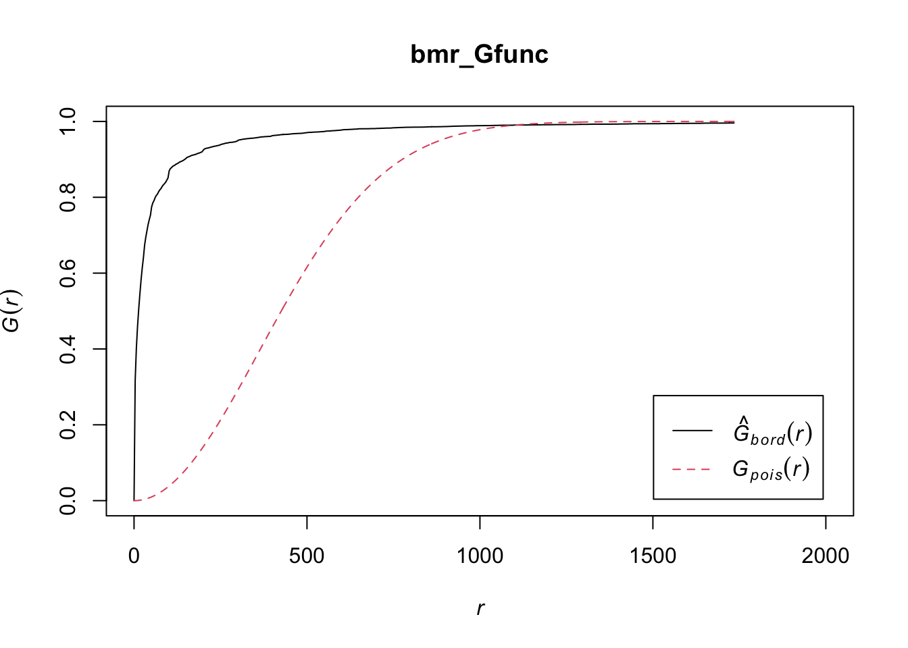
Observations:
- In this case, the black line(observed cumulative points) rises much more quickly than the red line(theoretical G function), particularly at smaller distances (around 0 to 500 meters). This suggests that road accidents in this region are highly clustered at short distances. The two lines converge as the distance increases, indicating that at larger scales, the distribution of accidents approaches randomness.
To confirm the observed spatial patterns above, a hypothesis test will be conducted. The hypothesis and test are as follows:
Ho = The distribution of childcare services at BMR are randomly distributed.
H1= The distribution of childcare services at BMR are not randomly distributed.
The null hypothesis will be rejected if p-value is smaller than alpha value of 0.001.
Note
Key Components of the Plot to look out for: Black Line: This is the observed G-function, which represents the cumulative distribution of distances between the points (accidents), Red Dashed Line: This is the theoretical G-function representing what is expected if the points were randomly distributed, Gray Shaded Area: These represent the upper and lower bounds of the G-function envelope, generated from 999 simulations. The envelope gives a range of G-function values that would be expected under random distribution. If the observed G-function (black line) falls within the gray envelope, there is no significant deviation from CSR, meaning that the distribution could be random.
Generating 999 simulations of CSR ...
1, 2, 3, ......10.........20.........30.........40.........50.........60..
.......70.........80.........90.........100.........110.........120.........130
.........140.........150.........160.........170.........180.........190........
.200.........210.........220.........230.........240.........250.........260......
...270.........280.........290.........300.........310.........320.........330....
.....340.........350.........360.........370.........380.........390.........400..
.......410.........420.........430.........440.........450.........460.........470
.........480.........490.........500.........510.........520.........530........
.540.........550.........560.........570.........580.........590.........600......
...610.........620.........630.........640.........650.........660.........670....
.....680.........690.........700.........710.........720.........730.........740..
.......750.........760.........770.........780.........790.........800.........810
.........820.........830.........840.........850.........860.........870........
.880.........890.........900.........910.........920.........930.........940......
...950.........960.........970.........980.........990........
999.
Done.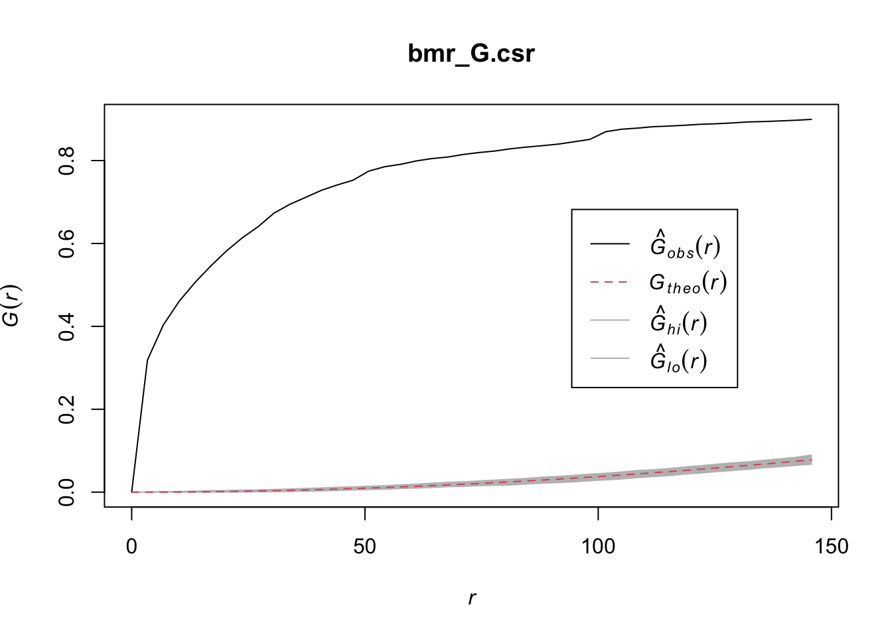
For the BMR, the black line lies above the red dashed line and also extends beyond the gray envelope for the whole range of r. The null hypothesis (that the distribution of traffic accidents in BMR is random) should be rejected.
Generating 999 simulations of CSR ...
1, 2, 3, ......10.........20.........30.........40.........50.........60..
.......70.........80.........90.........100.........110.........120.........130
.........140.........150.........160.........170.........180.........190........
.200.........210.........220.........230.........240.........250.........260......
...270.........280.........290.........300.........310.........320.........330....
.....340.........350.........360.........370.........380.........390.........400..
.......410.........420.........430.........440.........450.........460.........470
.........480.........490.........500.........510.........520.........530........
.540.........550.........560.........570.........580.........590.........600......
...610.........620.........630.........640.........650.........660.........670....
.....680.........690.........700.........710.........720.........730.........740..
.......750.........760.........770.........780.........790.........800.........810
.........820.........830.........840.........850.........860.........870........
.880.........890.........900.........910.........920.........930.........940......
...950.........960.........970.........980.........990........
999.
Done.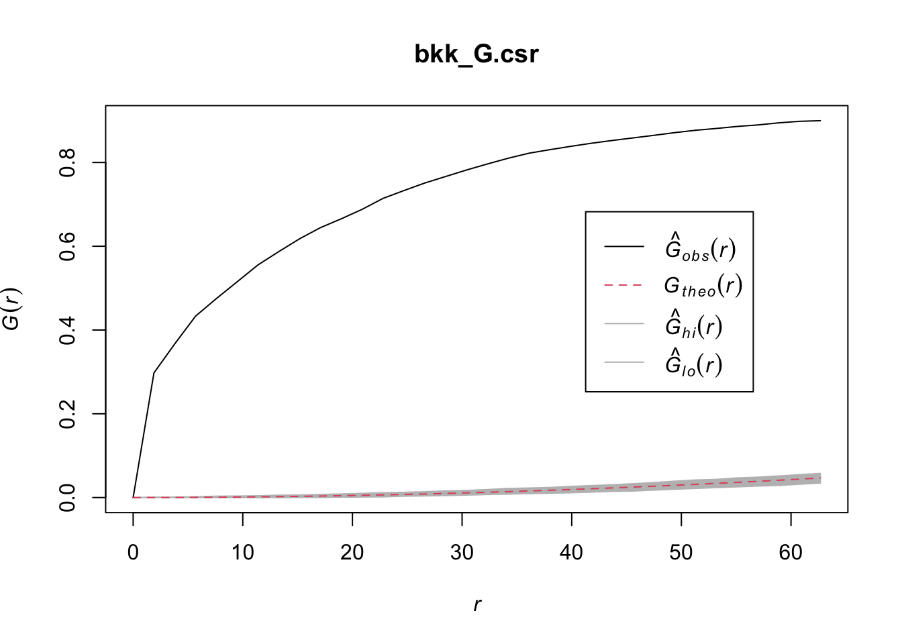
Generating 999 simulations of CSR ...
1, 2, 3, ......10.........20.........30.........40.........50.........60..
.......70.........80.........90.........100.........110.........120.........130
.........140.........150.........160.........170.........180.........190........
.200.........210.........220.........230.........240.........250.........260......
...270.........280.........290.........300.........310.........320.........330....
.....340.........350.........360.........370.........380.........390.........400..
.......410.........420.........430.........440.........450.........460.........470
.........480.........490.........500.........510.........520.........530........
.540.........550.........560.........570.........580.........590.........600......
...610.........620.........630.........640.........650.........660.........670....
.....680.........690.........700.........710.........720.........730.........740..
.......750.........760.........770.........780.........790.........800.........810
.........820.........830.........840.........850.........860.........870........
.880.........890.........900.........910.........920.........930.........940......
...950.........960.........970.........980.........990........
999.
Done.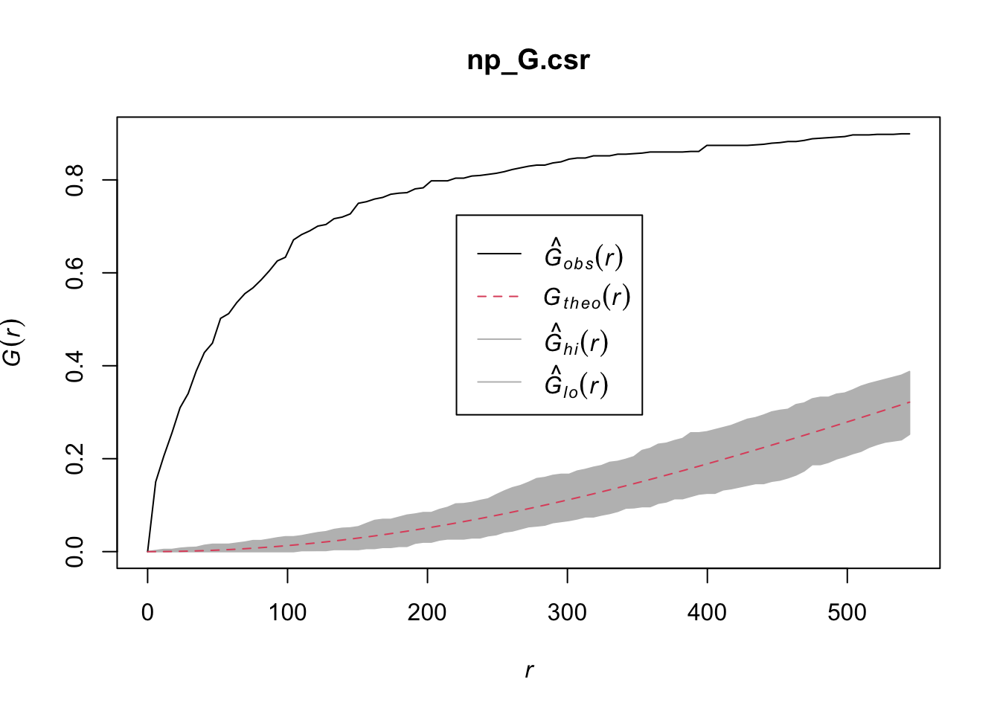
Generating 999 simulations of CSR ...
1, 2, 3, ......10.........20.........30.........40.........50.........60..
.......70.........80.........90.........100.........110.........120.........130
.........140.........150.........160.........170.........180.........190........
.200.........210.........220.........230.........240.........250.........260......
...270.........280.........290.........300.........310.........320.........330....
.....340.........350.........360.........370.........380.........390.........400..
.......410.........420.........430.........440.........450.........460.........470
.........480.........490.........500.........510.........520.........530........
.540.........550.........560.........570.........580.........590.........600......
...610.........620.........630.........640.........650.........660.........670....
.....680.........690.........700.........710.........720.........730.........740..
.......750.........760.........770.........780.........790.........800.........810
.........820.........830.........840.........850.........860.........870........
.880.........890.........900.........910.........920.........930.........940......
...950.........960.........970.........980.........990........
999.
Done.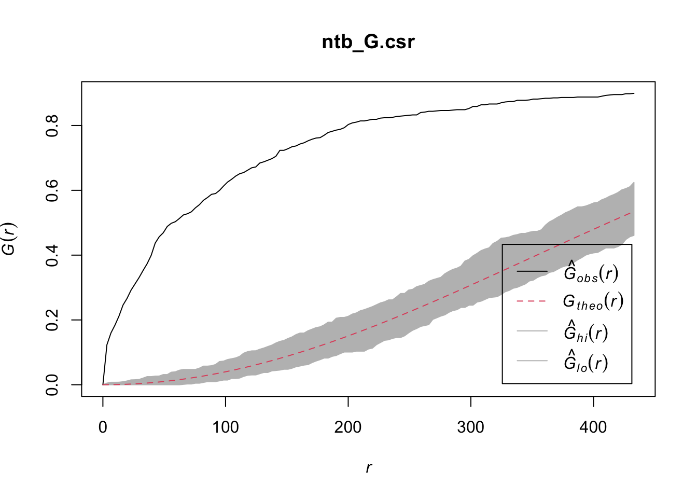
Generating 999 simulations of CSR ...
1, 2, 3, ......10.........20.........30.........40.........50.........60..
.......70.........80.........90.........100.........110.........120.........130
.........140.........150.........160.........170.........180.........190........
.200.........210.........220.........230.........240.........250.........260......
...270.........280.........290.........300.........310.........320.........330....
.....340.........350.........360.........370.........380.........390.........400..
.......410.........420.........430.........440.........450.........460.........470
.........480.........490.........500.........510.........520.........530........
.540.........550.........560.........570.........580.........590.........600......
...610.........620.........630.........640.........650.........660.........670....
.....680.........690.........700.........710.........720.........730.........740..
.......750.........760.........770.........780.........790.........800.........810
.........820.........830.........840.........850.........860.........870........
.880.........890.........900.........910.........920.........930.........940......
...950.........960.........970.........980.........990........
999.
Done.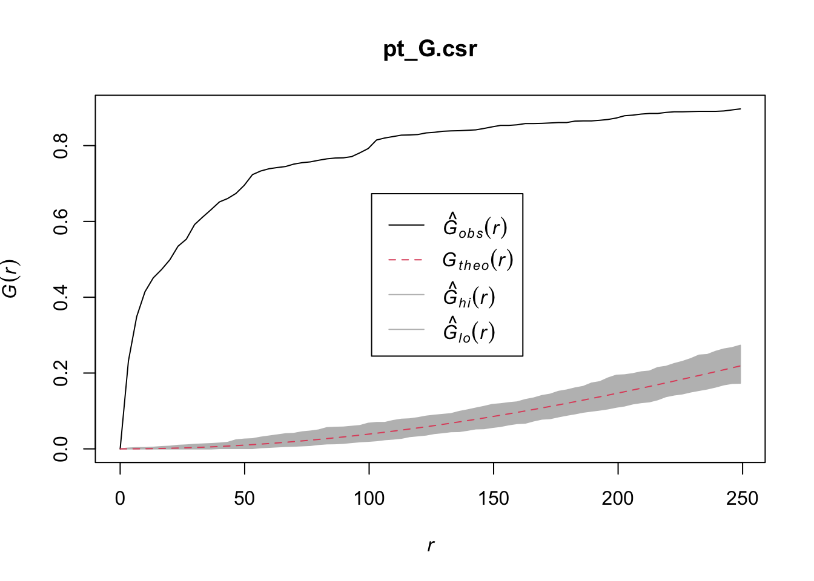
Generating 999 simulations of CSR ...
1, 2, 3, ......10.........20.........30.........40.........50.........60..
.......70.........80.........90.........100.........110.........120.........130
.........140.........150.........160.........170.........180.........190........
.200.........210.........220.........230.........240.........250.........260......
...270.........280.........290.........300.........310.........320.........330....
.....340.........350.........360.........370.........380.........390.........400..
.......410.........420.........430.........440.........450.........460.........470
.........480.........490.........500.........510.........520.........530........
.540.........550.........560.........570.........580.........590.........600......
...610.........620.........630.........640.........650.........660.........670....
.....680.........690.........700.........710.........720.........730.........740..
.......750.........760.........770.........780.........790.........800.........810
.........820.........830.........840.........850.........860.........870........
.880.........890.........900.........910.........920.........930.........940......
...950.........960.........970.........980.........990........
999.
Done.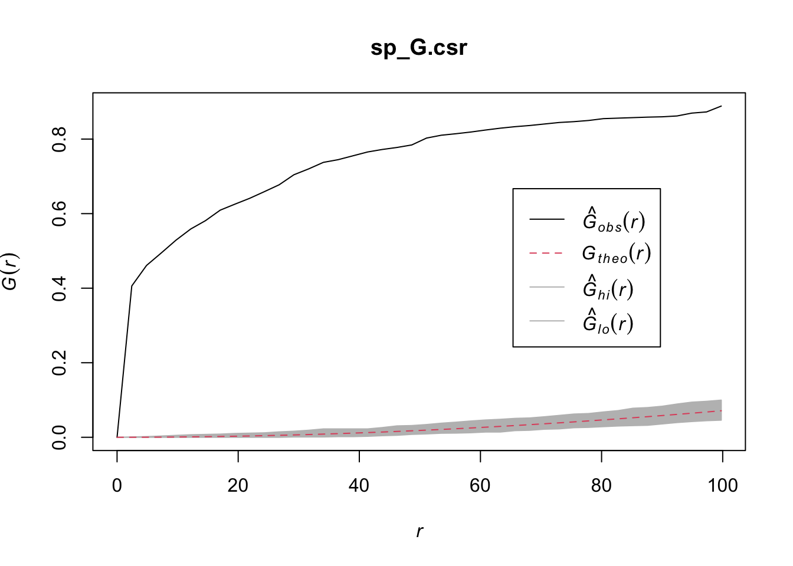
Generating 999 simulations of CSR ...
1, 2, 3, ......10.........20.........30.........40.........50.........60..
.......70.........80.........90.........100.........110.........120.........130
.........140.........150.........160.........170.........180.........190........
.200.........210.........220.........230.........240.........250.........260......
...270.........280.........290.........300.........310.........320.........330....
.....340.........350.........360.........370.........380.........390.........400..
.......410.........420.........430.........440.........450.........460.........470
.........480.........490.........500.........510.........520.........530........
.540.........550.........560.........570.........580.........590.........600......
...610.........620.........630.........640.........650.........660.........670....
.....680.........690.........700.........710.........720.........730.........740..
.......750.........760.........770.........780.........790.........800.........810
.........820.........830.........840.........850.........860.........870........
.880.........890.........900.........910.........920.........930.........940......
...950.........960.........970.........980.........990........
999.
Done.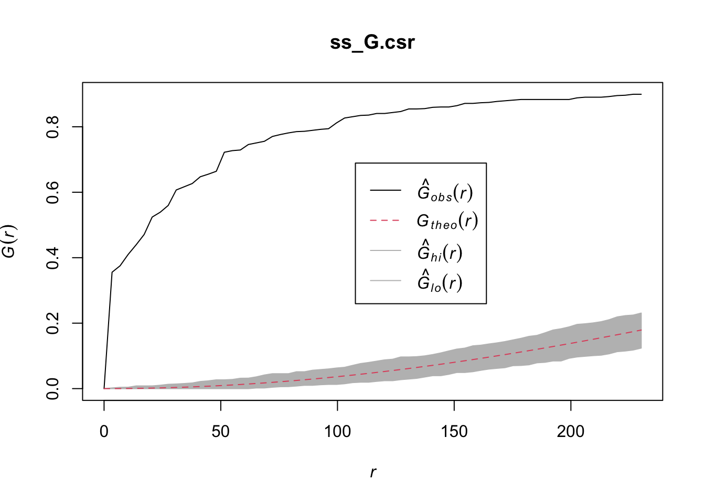
From observing all 6 provinces individually, the black line lies above the red dashed line and extends beyond the gray envelope for the whole range of r meaning that we will be rejecting the null hypothesis for all provinces. This suggests that the distribution of traffic accidents is not random and is very likely clustered.
5.4.2 F-Function
The F-Function, extends the analysis of spatial patterns by evaluating the distance between each event and its nearest neighbor. Unlike the G function, which focuses on the probability of finding an event within a certain distance, the F function calculates the expected number of nearest neighbors within a specified radius. For road accidents in BMR, the F function can be used to understand whether accidents are likely to occur near previously identified accident sites, aiding in the identification of hazardous locations and helping prioritize road safety improvements.
F_BMR = Fest(accidents_ppp)
plot(F_BMR)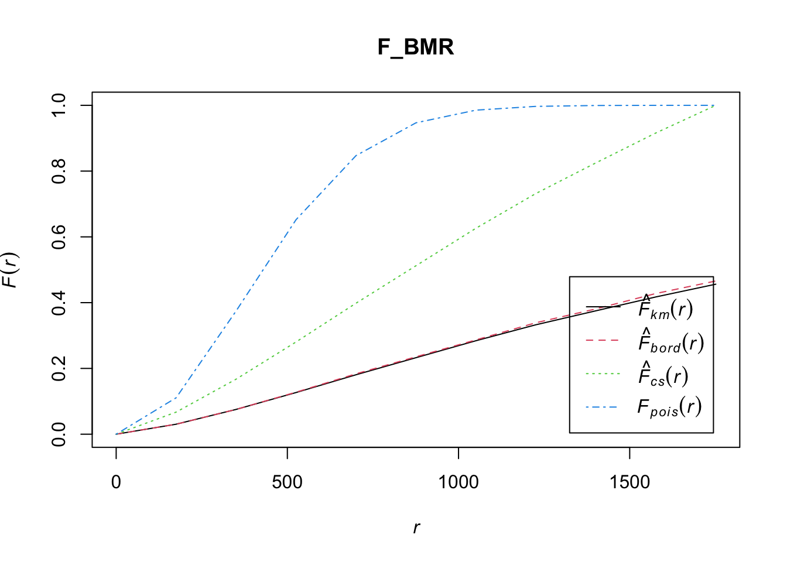
In this plot, both the black and green lines lie significantly above the blue dashed line at smaller distances (up to around 500 meters). This suggests clustering, meaning that random locations in the region are likely to be closer to accident points than expected under a random distribution. The clustering diminishes as the distance increases, with the lines converging closer to the theoretical line at larger distances.
To confirm the observed spatial patterns above, a hypothesis test will be conducted. The hypothesis and test are as follows:
Ho = The distribution of accidents at BMR are randomly distributed.
H1= The distribution of accidents at BMR are not randomly distributed.
The null hypothesis will be rejected if p-value is smaller than alpha value of 0.001.
Note
Key Components of the Plot to look out for: Black Line: This is the observed F-function, which represents the cumulative distribution of distances from a typical location to the nearest point (accident). Red Dashed Line: This is the theoretical F-function representing what we would expect if the points were randomly distributed. Gray Shaded Area: These represent the upper and lower bounds of the F-function envelope, generated from 999 simulations under CSR. The envelope provides a range of F-function values that would be expected under random distribution. If the observed F-function (black line) falls within the gray envelope, there is no significant deviation from CSR, meaning that the distribution could be random.
Generating 999 simulations of CSR ...
1, 2, 3, ......10.........20.........30.........40.........50.........60..
.......70.........80.........90.........100.........110.........120.........130
.........140.........150.........160.........170.........180.........190........
.200.........210.........220.........230.........240.........250.........260......
...270.........280.........290.........300.........310.........320.........330....
.....340.........350.........360.........370.........380.........390.........400..
.......410.........420.........430.........440.........450.........460.........470
.........480.........490.........500.........510.........520.........530........
.540.........550.........560.........570.........580.........590.........600......
...610.........620.........630.........640.........650.........660.........670....
.....680.........690.........700.........710.........720.........730.........740..
.......750.........760.........770.........780.........790.........800.........810
.........820.........830.........840.........850.........860.........870........
.880.........890.........900.........910.........920.........930.........940......
...950.........960.........970.........980.........990........
999.
Done.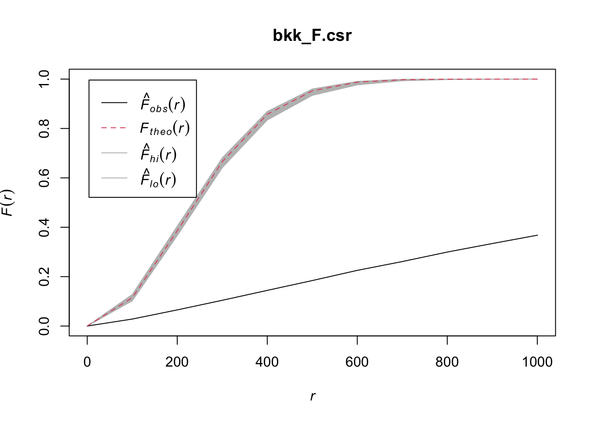
Generating 999 simulations of CSR ...
1, 2, 3, ......10.........20.........30.........40.........50.........60..
.......70.........80.........90.........100.........110.........120.........130
.........140.........150.........160.........170.........180.........190........
.200.........210.........220.........230.........240.........250.........260......
...270.........280.........290.........300.........310.........320.........330....
.....340.........350.........360.........370.........380.........390.........400..
.......410.........420.........430.........440.........450.........460.........470
.........480.........490.........500.........510.........520.........530........
.540.........550.........560.........570.........580.........590.........600......
...610.........620.........630.........640.........650.........660.........670....
.....680.........690.........700.........710.........720.........730.........740..
.......750.........760.........770.........780.........790.........800.........810
.........820.........830.........840.........850.........860.........870........
.880.........890.........900.........910.........920.........930.........940......
...950.........960.........970.........980.........990........
999.
Done.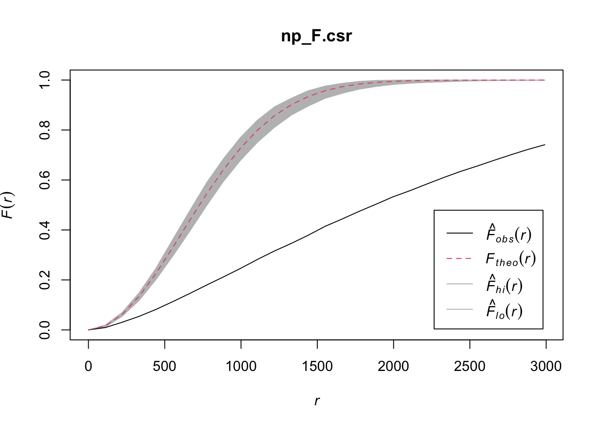
Generating 999 simulations of CSR ...
1, 2, 3, ......10.........20.........30.........40.........50.........60..
.......70.........80.........90.........100.........110.........120.........130
.........140.........150.........160.........170.........180.........190........
.200.........210.........220.........230.........240.........250.........260......
...270.........280.........290.........300.........310.........320.........330....
.....340.........350.........360.........370.........380.........390.........400..
.......410.........420.........430.........440.........450.........460.........470
.........480.........490.........500.........510.........520.........530........
.540.........550.........560.........570.........580.........590.........600......
...610.........620.........630.........640.........650.........660.........670....
.....680.........690.........700.........710.........720.........730.........740..
.......750.........760.........770.........780.........790.........800.........810
.........820.........830.........840.........850.........860.........870........
.880.........890.........900.........910.........920.........930.........940......
...950.........960.........970.........980.........990........
999.
Done.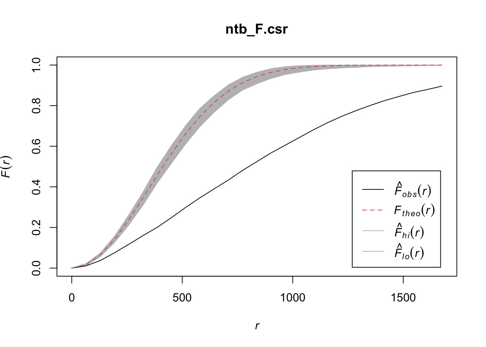
Generating 999 simulations of CSR ...
1, 2, 3, ......10.........20.........30.........40.........50.........60..
.......70.........80.........90.........100.........110.........120.........130
.........140.........150.........160.........170.........180.........190........
.200.........210.........220.........230.........240.........250.........260......
...270.........280.........290.........300.........310.........320.........330....
.....340.........350.........360.........370.........380.........390.........400..
.......410.........420.........430.........440.........450.........460.........470
.........480.........490.........500.........510.........520.........530........
.540.........550.........560.........570.........580.........590.........600......
...610.........620.........630.........640.........650.........660.........670....
.....680.........690.........700.........710.........720.........730.........740..
.......750.........760.........770.........780.........790.........800.........810
.........820.........830.........840.........850.........860.........870........
.880.........890.........900.........910.........920.........930.........940......
...950.........960.........970.........980.........990........
999.
Done.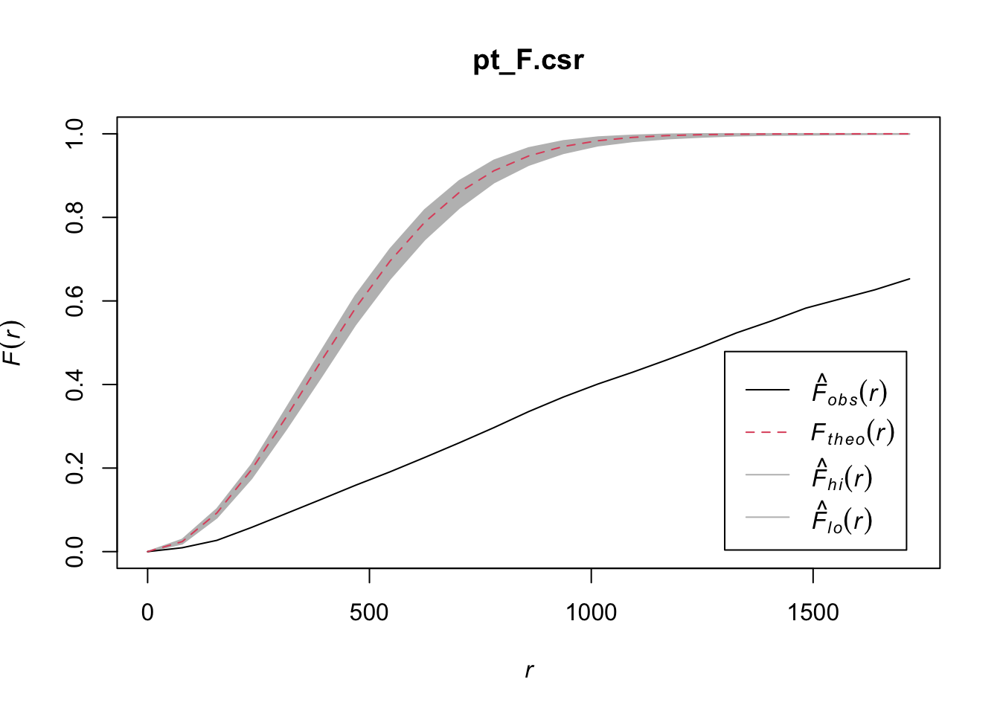
Generating 999 simulations of CSR ...
1, 2, 3, ......10.........20.........30.........40.........50.........60..
.......70.........80.........90.........100.........110.........120.........130
.........140.........150.........160.........170.........180.........190........
.200.........210.........220.........230.........240.........250.........260......
...270.........280.........290.........300.........310.........320.........330....
.....340.........350.........360.........370.........380.........390.........400..
.......410.........420.........430.........440.........450.........460.........470
.........480.........490.........500.........510.........520.........530........
.540.........550.........560.........570.........580.........590.........600......
...610.........620.........630.........640.........650.........660.........670....
.....680.........690.........700.........710.........720.........730.........740..
.......750.........760.........770.........780.........790.........800.........810
.........820.........830.........840.........850.........860.........870........
.880.........890.........900.........910.........920.........930.........940......
...950.........960.........970.........980.........990........
999.
Done.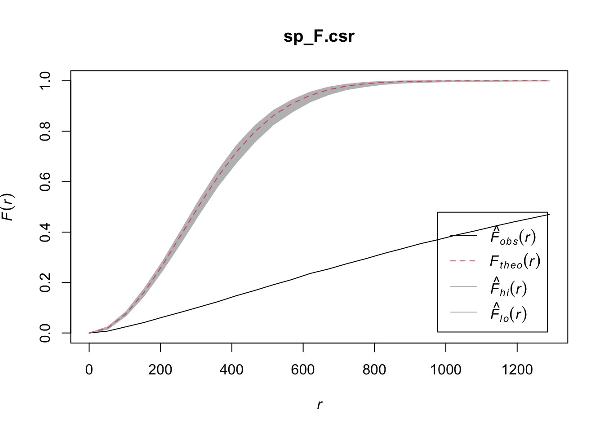
Generating 999 simulations of CSR ...
1, 2, 3, ......10.........20.........30.........40.........50.........60..
.......70.........80.........90.........100.........110.........120.........130
.........140.........150.........160.........170.........180.........190........
.200.........210.........220.........230.........240.........250.........260......
...270.........280.........290.........300.........310.........320.........330....
.....340.........350.........360.........370.........380.........390.........400..
.......410.........420.........430.........440.........450.........460.........470
.........480.........490.........500.........510.........520.........530........
.540.........550.........560.........570.........580.........590.........600......
...610.........620.........630.........640.........650.........660.........670....
.....680.........690.........700.........710.........720.........730.........740..
.......750.........760.........770.........780.........790.........800.........810
.........820.........830.........840.........850.........860.........870........
.880.........890.........900.........910.........920.........930.........940......
...950.........960.........970.........980.........990........
999.
Done.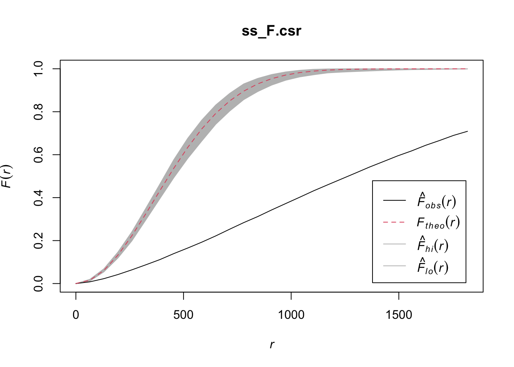
In all the 6 provinces of BMR, since the observed F-function is not within the envelope, the null hypothesis (that the distribution of accidents in BMR is random) will be rejected. This suggests that the distribution of traffic accident significantly deviate from what would be expected under CSR at the significance level of 0.001.
5.4.3 K-Function
Ripley’s K function is a statistical method used to analyze the spatial distribution of events within a defined area. It measures the expected number of events within a given distance of an arbitrary point, compared to what would be expected if the events were randomly distributed. This function helps in identifying clustering patterns by comparing the observed spatial distribution of events to a theoretical random distribution. In the context of road accidents in BMR, Ripley’s K function can reveal whether accidents are clustered in specific areas, such as high-traffic zones or accident-prone regions, which could assist in targeted interventions and resource allocation.
K_BMR = Kest(accidents_ppp, correction = "Ripley")
plot(K_BMR, . -r ~ r, ylab= "K(d)-r", xlab = "d(m)")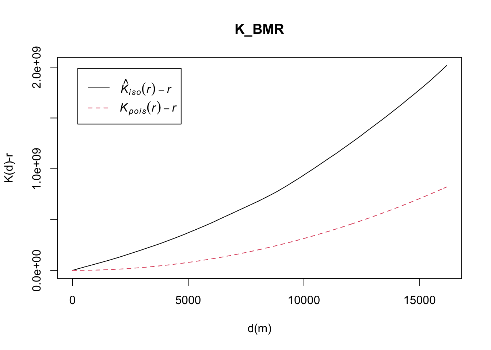
In this plot, the black line is significantly above the red line for all distances, indicating strong clustering of road accidents in the BMR. This means that road accidents tend to occur closer together than would be expected if they were randomly distributed. The degree of clustering increases as distance increases, suggesting that accidents are concentrated in specific areas or regions within the BMR. This clustering effect is particularly relevant for urban planning and traffic safety interventions, as it highlights regions where accidents are more frequent, requiring targeted measures to improve road safety.
We test with Monte Carlo simulations for each province:
Ho = The distribution of accidents at BMR are randomly distributed.
H1= The distribution of accidents at BMR are not randomly distributed.
The null hypothesis will be rejected if p-value is smaller than alpha value of 0.001.
Note
Key Components of the Plot to look out for: Black Line: This is the observed K-function with the linear r-term subtracted. The KK-function typically increases with distance r, and subtracting r makes it easier to see deviations from the expected pattern. Red Dashed Line: This is the theoretical K-function (with the r-term subtracted). If the points were randomly distributed, the observed K-function should follow this line. Gray Shaded Area: These represent the upper and lower bounds of the K-function envelope generated from simulations under CSR. The envelope shows the range of expected values if the distribution were random. If the observed K-function (black line) falls within the gray envelope, there is no significant deviation from CSR, implying that the points could be randomly distributed.
Generating 50 simulations of CSR ...
1, 2, 3, 4, 5, 6, 7, 8, 9, 10, 11, 12, 13, 14, 15, 16, 17, 18, 19, 20,
21, 22, 23, 24, 25, 26, 27, 28, 29, 30, 31, 32, 33, 34, 35, 36, 37, 38, 39, 40,
41, 42, 43, 44, 45, 46, 47, 48, 49,
50.
Done.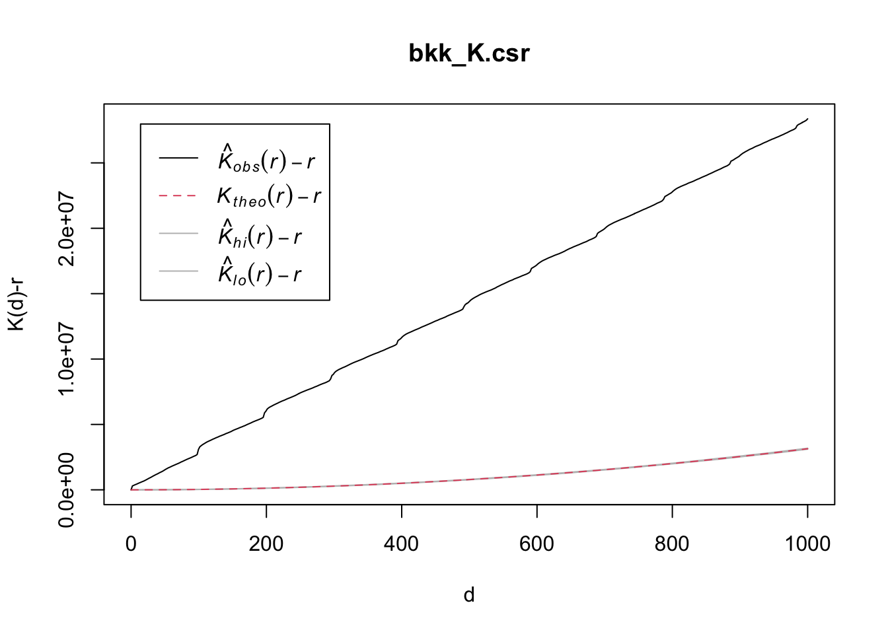
Generating 50 simulations of CSR ...
1, 2, 3, 4, 5, 6, 7, 8, 9, 10, 11, 12, 13, 14, 15, 16, 17, 18, 19, 20,
21, 22, 23, 24, 25, 26, 27, 28, 29, 30, 31, 32, 33, 34, 35, 36, 37, 38, 39, 40,
41, 42, 43, 44, 45, 46, 47, 48, 49,
50.
Done.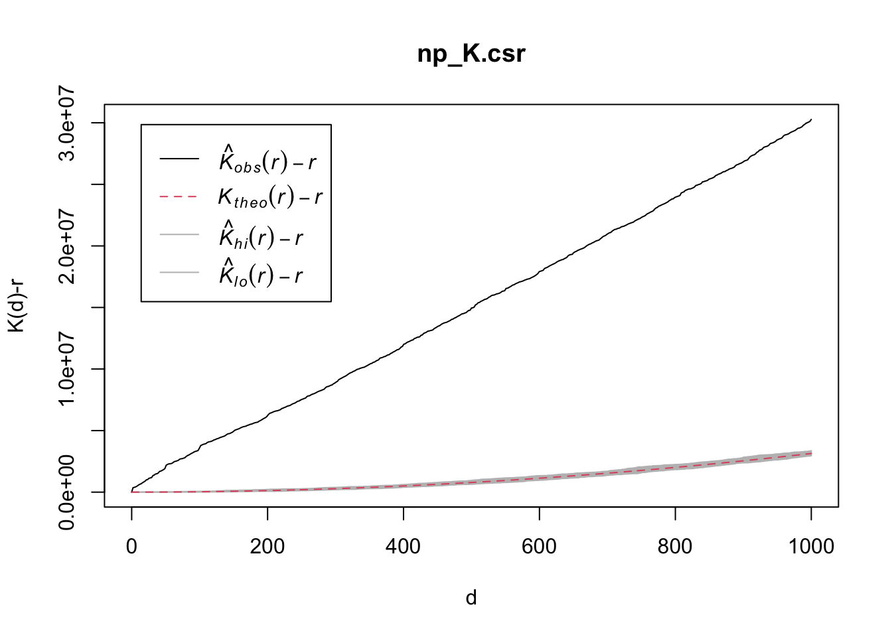
Generating 50 simulations of CSR ...
1, 2, 3, 4, 5, 6, 7, 8, 9, 10, 11, 12, 13, 14, 15, 16, 17, 18, 19, 20,
21, 22, 23, 24, 25, 26, 27, 28, 29, 30, 31, 32, 33, 34, 35, 36, 37, 38, 39, 40,
41, 42, 43, 44, 45, 46, 47, 48, 49,
50.
Done.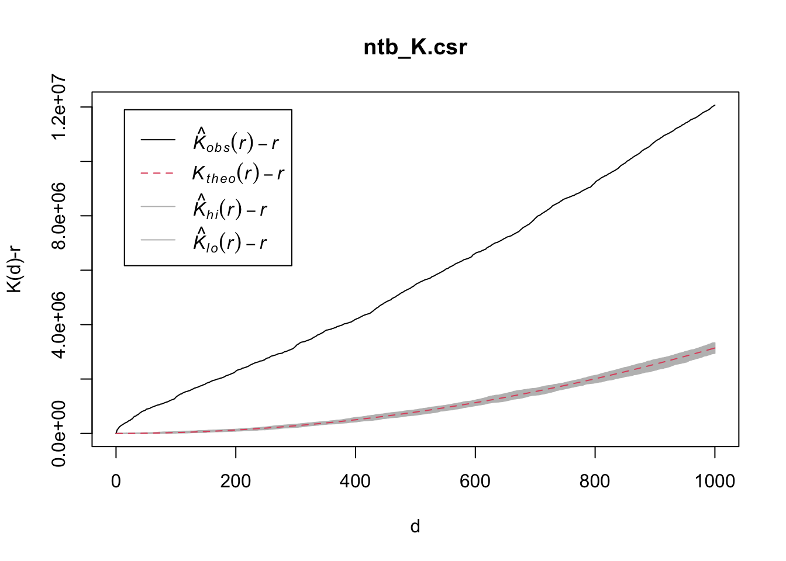
Generating 50 simulations of CSR ...
1, 2, 3, 4, 5, 6, 7, 8, 9, 10, 11, 12, 13, 14, 15, 16, 17, 18, 19, 20,
21, 22, 23, 24, 25, 26, 27, 28, 29, 30, 31, 32, 33, 34, 35, 36, 37, 38, 39, 40,
41, 42, 43, 44, 45, 46, 47, 48, 49,
50.
Done.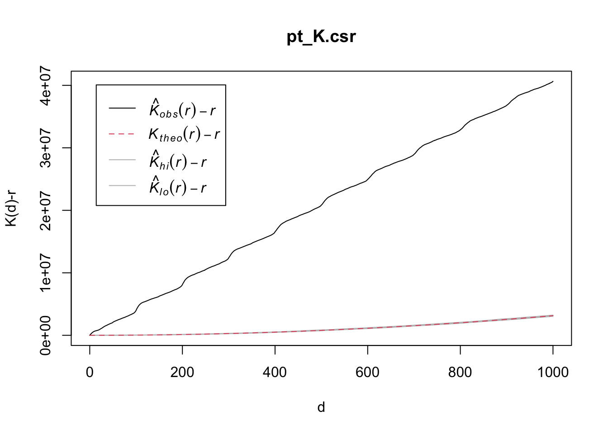
Generating 50 simulations of CSR ...
1, 2, 3, 4, 5, 6, 7, 8, 9, 10, 11, 12, 13, 14, 15, 16, 17, 18, 19, 20,
21, 22, 23, 24, 25, 26, 27, 28, 29, 30, 31, 32, 33, 34, 35, 36, 37, 38, 39, 40,
41, 42, 43, 44, 45, 46, 47, 48, 49,
50.
Done.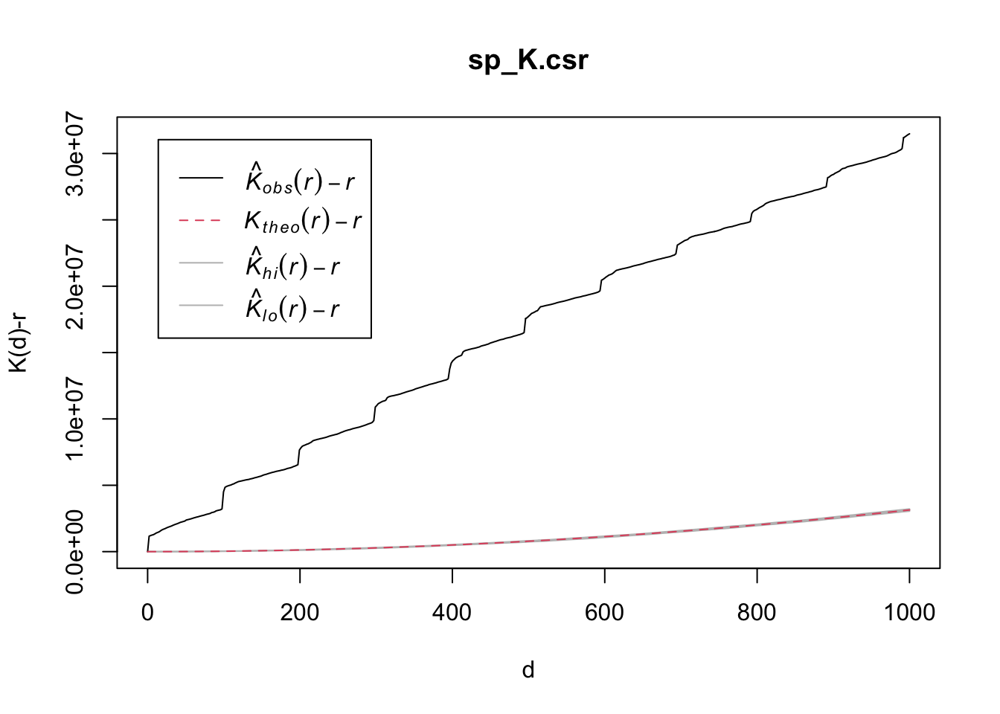
Generating 50 simulations of CSR ...
1, 2, 3, 4, 5, 6, 7, 8, 9, 10, 11, 12, 13, 14, 15, 16, 17, 18, 19, 20,
21, 22, 23, 24, 25, 26, 27, 28, 29, 30, 31, 32, 33, 34, 35, 36, 37, 38, 39, 40,
41, 42, 43, 44, 45, 46, 47, 48, 49,
50.
Done.Since the observed K-function for all provinces are above the envelope, this suggests strong evidence of clustering. The accidents in BMR are more clustered than would be expected under a random distribution. Null hypothesis should be rejected.
5.4.4 L-Function
The L function, or the L-Function, is used to transform the K function into a more interpretable format by normalizing it against the distance, providing a more intuitive understanding of spatial clustering. It plots the observed spatial distribution of events against a theoretical random distribution, adjusting for the size of the study area. When applied to road accidents in BMR, the L function can illustrate whether accidents are distributed more uniformly or clustered in specific areas, assisting in spatial planning and accident prevention strategies by visualizing deviations from random patterns.
bmr_L = Lest(accidents_ppp, correction = "Ripley")
plot(bmr_L, . -r ~ r,
ylab= "L(d)-r", xlab = "d(m)")The L-function plot suggests that road accidents in the BMR) are clustered at different scales, as indicated by the black line being significantly above the red dashed line, particularly at larger distances. This means that certain areas are seeing higher concentrations of accidents compared to a random distribution across the region.
In summary, the accidents in BMR are not randomly distributed but are spatially clustered, meaning that specific areas experience more accidents than expected under CSR.
We test with Monte Carlo simulations for each province:
Ho = The distribution of accidents at BMR are randomly distributed.
H1= The distribution of accidents at BMR are not randomly distributed.
The null hypothesis will be rejected if p-value is smaller than alpha value of 0.001.
Generating 50 simulations of CSR ...
1, 2, 3, 4, 5, 6, 7, 8, 9, 10, 11, 12, 13, 14, 15, 16, 17, 18, 19, 20,
21, 22, 23, 24, 25, 26, 27, 28, 29, 30, 31, 32, 33, 34, 35, 36, 37, 38, 39, 40,
41, 42, 43, 44, 45, 46, 47, 48, 49,
50.
Done.Generating 50 simulations of CSR ...
1, 2, 3, 4, 5, 6, 7, 8, 9, 10, 11, 12, 13, 14, 15, 16, 17, 18, 19, 20,
21, 22, 23, 24, 25, 26, 27, 28, 29, 30, 31, 32, 33, 34, 35, 36, 37, 38, 39, 40,
41, 42, 43, 44, 45, 46, 47, 48, 49,
50.
Done.Generating 50 simulations of CSR ...
1, 2, 3, 4, 5, 6, 7, 8, 9, 10, 11, 12, 13, 14, 15, 16, 17, 18, 19, 20,
21, 22, 23, 24, 25, 26, 27, 28, 29, 30, 31, 32, 33, 34, 35, 36, 37, 38, 39, 40,
41, 42, 43, 44, 45, 46, 47, 48, 49,
50.
Done.Generating 50 simulations of CSR ...
1, 2, 3, 4, 5, 6, 7, 8, 9, 10, 11, 12, 13, 14, 15, 16, 17, 18, 19, 20,
21, 22, 23, 24, 25, 26, 27, 28, 29, 30, 31, 32, 33, 34, 35, 36, 37, 38, 39, 40,
41, 42, 43, 44, 45, 46, 47, 48, 49,
50.
Done.Generating 50 simulations of CSR ...
1, 2, 3, 4, 5, 6, 7, 8, 9, 10, 11, 12, 13, 14, 15, 16, 17, 18, 19, 20,
21, 22, 23, 24, 25, 26, 27, 28, 29, 30, 31, 32, 33, 34, 35, 36, 37, 38, 39, 40,
41, 42, 43, 44, 45, 46, 47, 48, 49,
50.
Done.Generating 50 simulations of CSR ...
1, 2, 3, 4, 5, 6, 7, 8, 9, 10, 11, 12, 13, 14, 15, 16, 17, 18, 19, 20,
21, 22, 23, 24, 25, 26, 27, 28, 29, 30, 31, 32, 33, 34, 35, 36, 37, 38, 39, 40,
41, 42, 43, 44, 45, 46, 47, 48, 49,
50.
Done.Since the observed L-function for all provinces are above the envelope, this suggests strong evidence of clustering,meaning that certain areas are seeing higher concentrations of accidents.
All of our analysis above indicates evidence of clustering therefore rejecting the null hypothesis.
5.5 Network Constrained Spatial Point Pattern Analysis
Network-Constrained Spatial Point Pattern Analysis (SPPA) is a powerful technique used to analyze the spatial distribution of events, such as road accidents, that are constrained to occur along a network, such as roads. Unlike traditional spatial analysis, which assumes events can occur anywhere in a continuous space, network-constrained methods recognize that certain types of events are limited to specific structures, such as roadways. By focusing on the road network, SPPA allows us to better understand how accidents are distributed along streets, highways, and intersections, providing more accurate insights into patterns that are influenced by the geometry and connectivity of the network itself.
One common approach within SPPA is Network Kernel Density Estimation (NKDE). NKDE is used to estimate the density of events, such as accidents, along a road network. Rather than assuming that events can occur anywhere in space, NKDE takes into account the fact that accidents are constrained to the network of roads, offering a more realistic representation of how incidents are distributed, This is inline with our observations from EDA . By using NKDE, we can detect high-risk areas or accident hotspots along specific road segments, which can guide traffic safety improvements. The method involves segmenting roads into smaller units (known as lixels) and applying a smoothing function (the kernel) to estimate density, accounting for the local network structure and traffic conditions.
For this section we will use spNetwork() package.
5.5.1 Determing Lixel Length & Generating centre points
We will first prepare lixel objects. The SpatialLines of the roads need to be cut into lixels with a specified minimal distance.
We use the network_knn() function to determine an appropriate distance for lixelizing the roads because it allows us to find the K nearest neighbor distances within the road network, which serves as a locally adapted bandwidth for our analysis. This approach ensures that the bandwidth is tailored to the density and distribution of the data, enhancing the accuracy of spatial analyses by adapting to local variations in accident density.
By setting accidents$weight <- 1 and then aggregating points with accidents_agg <- aggregate_points(accidents, 15, weight = "weight"), we effectively standardize the weights of individual accidents to a uniform value before aggregation. This uniform weighting ensures that the aggregation of accident points is not biased by varying weights and allows the bandwidth to be determined based solely on spatial proximity (15meter) rather than the influence of weight differences.
accidents$weight <- 1
accidents_agg <- aggregate_points(accidents, 15, weight = "weight")We can now calculate and visualize the distance of each accident point to its 30th neighbour.
From the histogram, the majority of distances are clustered at the lower end of the scale, with a significant number of accidents having distances to their 20th neighbor under 5,000 meters. This indicates a high density of accident occurrences in close proximity, as seen from the sharp peak near the beginning of the histogram. However, as the distance increases beyond 10,000 meters, the frequency of accidents drops off rapidly, suggesting that accidents are more spatially concentrated rather than uniformly distributed across the region.
To determine the minimum distance (mindist) during the lixelization process, we considered the density of the road network and the spatial resolution needed for my analysis. By experimenting with different values, it was found that 2000 meters offered an optimal balance, allowing for sufficient granularity in capturing road segments while ensuring computational efficiency. A smaller distance would have resulted in an excessive number of segments, increasing the computational burden without significantly improving the accuracy. Conversely, larger distances would have led to a loss of detail.
We decided to trim the bandwidth (bw) for values exceeding 10,000 meters during the kernel density estimation process to prevent extreme smoothing effects. Distances greater than 10,000 meters would likely blur meaningful spatial patterns, as accidents occurring more than 10 kilometers apart are less likely to be influenced by the same road conditions or features. This threshold ensures the kernel density estimation remains sensitive to local variations while avoiding over-smoothing.
5.5.2 Network Kernel Density Estimation
After determining lixels and appropriate distance, we are now ready to compute NKDE.
The NKDE was computed with the code chunk below.
trimed_bw <- ifelse(bws > 10000, 10000, bws)
lixels <- lixelize_lines(roads,2000,mindist = 1000)
samples <- lines_center(lixels)
densities <- nkde(lines = roads,
events = accidents_agg,
w = accidents_agg$weight,
samples = samples,
kernel_name = "gaussian",
bw = trimed_bw,
div= "bw",
adaptive = FALSE,
method = "simple",
digits = 1,
tol = 1,
grid_shape = c(5,5),
verbose = FALSE,
diggle_correction = FALSE,
study_area = NULL,
max_depth = 5, agg = NULL, sparse = TRUE)1. Bandwidth Trimming
From the histogram, we saw that there is some accidents for which the 20th neighbour is very far. Therefore, we adjust the bandwidth values (bws) to ensure that none exceed the maximum threshold of 10,000. This trimming helps to prevent excessively large bandwidth values, which could lead to over-smoothing in density estimates.
2. Lixelizing Roads
The lixelize_lines() function converts the road network into a grid of lixels (local pixels). This process simplifies the road network into a grid-based format for easier analysis. The determined distances were as follows:
The length of a lixel, lx_length is set to 2000m, and
The minimum length of a lixel, mindist is set to 1000m (to leave no accident points unrepresented).
3. Generating Line Centers
The lines_center() function calculates the central points of each lixel. These central points serve as sample locations where the density estimation will be computed.
4. Performing Kernel Density Estimation
lines = roads: Specifies the road network as the input lines for density estimation.events = accidents_agg: Provides the aggregated accident data as the events for density estimation.w = accidents_agg$weight: Uses weights from the aggregated accident data to account for the importance or frequency of each event.samples = samples: Uses the previously computed central points of lixels as the locations where density will be estimated.kernel_name = "gaussian": Specifies that a Gaussian kernel will be used for density estimation.bw = trimed_bw: Applies the bandwidth values, adjusted by trimming, for the kernel density estimation.div = "bw": Indicates that bandwidth should be divided by the specified valueadaptive = FALSE: Disables adaptive bandwidth selection, using a fixed bandwidth instead.method = "simple": Chooses a basic method for density estimation, likely referring to the simplest form of kernel density estimation.digits = 1: Sets the number of digits to which the results will be rounded.tol = 1: Specifies the tolerance level for convergence in the algorithm.grid_shape = c(1,1): Defines the shape of the grid on which the density estimation is performed, here a 1x1 unit grid.verbose = FALSE: Suppresses detailed output during computation.diggle_correction = FALSE: Disables correction for edge effects using the Diggle method.study_area = NULL: No specific study area is defined; the entire input area is used.max_depth = 5: Sets the maximum depth for data structures used in computation, likely affecting performance or detail.agg = NULL: No additional aggregation parameters are specified.sparse = TRUE: Uses a sparse matrix representation for efficiency, especially with large datasets.
samples$density_simple <- densities
lixels$density_simple <- densitiessamples$density_simple <- samples$density_simple*1000
lixels$density_simple <- lixels$density_simple*1000quantile_breaks <- quantile(lixels$density_simple, probs = seq(0, 1, length.out = 6), na.rm = TRUE)
tm_shape(lixels) +
tm_lines(col = "density_simple", palette = "Blues" , style = "fixed", breaks = quantile_breaks, legend.show = TRUE, lwd = 3) +
tm_shape(accidents_agg) +
tm_dots(col = "black", size = 0.01)Observations:
- The central area of the map (where the blue lines are darkest) shows the highest concentration of accidents, suggesting that these road segments experience the most frequent accidents. This could be an indication of highly trafficked roads or intersections.
- The outer areas, particularly in the northern and eastern parts of the map, have road segments with lower accident density, indicated by the lighter blue lines. These areas likely have less traffic or fewer accidents.
6 Temporal Analysis
Now that we have answered the question of where with spatial analysis, we are ready to answer the question of when by conducting temporal analysis.
Temporal analysis is crucial in understanding how patterns of road traffic accidents fluctuate over time, revealing insights into when accidents are more likely to occur. This approach focuses on analyzing variations in accident occurrence across different temporal dimensions, such as hours of the day, days of the week, or months of the year. By examining these time-based trends, we can identify specific periods with heightened accident risks, informing targeted interventions.
Temporal Kernel Density Estimation (KDE) will be employed to model the probability distribution of accidents over time, enabling a smooth visualization of accident density variations. This method helps to pinpoint accident hotspots within specific time frames, smoothing over isolated occurrences to highlight broader temporal trends. Through temporal KDE, we aim to better understand the timing of accident concentrations and whether certain periods exhibit consistently higher risks, aiding in the implementation of time-based traffic safety measures.
To start with the temporal analysis (with focus on time aspect), let’s revisit some of our EDA. We will use ggplot2 package to plot the following histograms.
ggplot(accidents, aes(x = Month_number)) +
geom_histogram(binwidth = 0.5, color = "black", fill = "steelblue") +
scale_x_continuous(breaks = 1:12, labels = month.name) +
labs(title = "Accident Count by Month", x = "Month", y = "Accidents") +
theme_minimal() ggplot(accidents, aes(x = dayofweek_fact)) +
geom_histogram(stat = "count",binwidth = 0.3, color = "black", fill = "steelblue") +
labs(title = "Accident Count by Day", x = "Day", y = "Accidents") +
theme_minimal()ggplot(accidents, aes(x = time_hour)) +
geom_histogram(stat = "count",binwidth = 0.3, color = "black", fill = "steelblue") +
labs(title = "Accident Count by Hour", x = "Hour", y = "Accidents") +
theme_minimal()We will use the tkde() function, from the spNetwork package in R, on time-series data. TKDE is a technique used to estimate the probability density of events occurring over time, helping to uncover patterns and trends in temporal data. The function uses a smoothing function to create a continuous estimate of the event density by weighting nearby events more heavily than distant ones. This smoothing is controlled by the bandwidth (bw) parameter, which determines how much influence neighboring events have. Smaller bandwidth values (e.g., bw = 1, bw = 2) result in less smoothing, allowing finer temporal patterns to be visible.
6.1 Temporal Analysis of Accidents by Month
The following steps were taken to calculate TKDE:
A vector of weights
wis created, assigning equal importance (weight of 1) to every observation in theaccidentsdataset. These weights are used in the TKDE calculation to specify how much each data point contributes to the density estimate.The
samplesvariable defines the time points where the density estimation will be calculated. Here, a sequence of numbers (representing months) is generated, incrementing by0.5. These time points span from the minimum(1) to the maximum values(12) in theMonth_numbercolumn.TKDE is then computed for various bandwidth values. A smaller bandwidth (like
bw = 1) makes the estimation more sensitive to local variations, while a larger bandwidth (likebw = 5orbw = 10) smooths out short-term fluctuations, focusing more on broader patterns. Thekernel_name = "quartic"specifies the kernel function used for smoothing.To help us plot the TKDE results, the
melt()function from thereshape2package was used to reshape the data from a wide format to a long format. This makes it easier to plot multiple TKDE estimates (for different bandwidths) using ggplot. Each row in the reshaped data corresponds to a specific time point and the corresponding density estimate for a particular bandwidth.
w <- rep(1, nrow(accidents))
samples <- seq(min(accidents$Month_number), max(accidents$Month_number), by = 0.5)
month_kernel_values <- data.frame(
bw_1 = tkde(accidents$Month_number, w = w, samples = samples, bw = 1, kernel_name = "quartic"),
bw_2 = tkde(accidents$Month_number, w = w, samples = samples, bw = 2, kernel_name = "quartic"),
bw_3 = tkde(accidents$Month_number, w = w, samples = samples, bw = 3, kernel_name = "quartic"),
bw_4 = tkde(accidents$Month_number, w = w, samples = samples, bw = 4, kernel_name = "quartic"),
bw_5= tkde(accidents$Month_number, w = w, samples = samples, bw = 5, kernel_name = "quartic"),
bw_6= tkde(accidents$Month_number, w = w, samples = samples, bw = 6, kernel_name = "quartic"),
time = samples
)df_time <- reshape2::melt(month_kernel_values, id.vars = "time")
df_time$variable <- as.factor(df_time$variable)
month_labels <- c("Jan", "Feb", "Mar", "Apr", "May", "Jun", "Jul", "Aug", "Sep", "Oct", "Nov", "Dec")
ggplot(data = df_time) +
geom_line(aes(x = time, y = value)) +
scale_x_continuous(breaks = 1:12, labels = month_labels) +
facet_wrap(vars(variable), ncol = 2, scales = "free") +
theme_minimal() +
theme(axis.text = element_text(size = 8), strip.text = element_text(size = 10)) +
labs(title = "Temporal KDE for Accident Occurrences by Month", x = "Month", y = "Density")Observations:
Higher sensitivity with smaller bandwidths (
bw_1andbw_2):The
bw_1plot displays more fluctuations and short-term variations between months, indicating that a smaller bandwidth captures more local, month-to-month changes in accident occurrences. We observe notable peaks in April and December, with noticeable troughs in May and June.In
bw_2, the curve is smoother but still retains some of the local fluctuations, especially the rise around May and a visible peak in November.
Smoothing increases with larger bandwidths (
bw_3tobw_6):As the bandwidth increases, the plots smooth out, and local variations are reduced. Starting with
bw_3, we see more of a gradual rise and fall pattern throughout the year, with a broader peak from around April to November.The higher bandwidths (especially
bw_5andbw_6) create bell-shaped curves where specific monthly fluctuations disappear, indicating a smoothed general trend: accident occurrences tend to be lower at the beginning of the year, gradually increasing through the middle months, peaking around October-November, and then dropping again towards December.It seems that a bandwidth between 2 and 3 capture the bimodal shape of the temporal dimension of traffic accidents best.
Seasonal patterns:
- Across all bandwidths, we observe that accident occurrences seem to increase from April, and then decreasing towards the middle of the year. Then increasing again towards the end of the year. This suggests a possible seasonal effect, with more accidents occurring in the second half of the year.
6.2 Temporal Analysis of Accidents by Day of Week
Using similar code from the previous section, we derive the temporal aspect of accidents for each day of the week.
Observations:
- It seems that a bandwidth between 1 and 2 capture the bimodal shape of the temporal dimension of traffic accidents best.
6.3 Temporal Analysis of Accidents by Hours
Observations:
- It seems that a bandwidth between 2 and 4 capture the bimodal shape of the temporal dimension of traffic accidents best.
7 Spatio Temporal Point Pattern Analysis
Spatio-temporal analysis integrates both spatial and temporal dimensions, providing a comprehensive understanding of how phenomena, such as road traffic accidents, vary across both space and time, summing up our study. While temporal analysis reveals when accidents are likely to occur and spatial analysis shows where they happen, spatio-temporal analysis highlights the dynamic relationship between these two aspects. This approach is particularly important in identifying patterns that might be missed when only one dimension is considered, such as areas that become accident hotspots only during specific times. By combining both time and location, spatio-temporal analysis offers a richer and more actionable insight into accident trends.
Spatio-temporal Kernel Density Estimation (STKDE) is used to visualize these patterns by estimating accident densities across space and time simultaneously. This method allows us to capture not only where accidents are concentrated, but also how their intensity fluctuates over different hours or days. STKDE helps smooth data over both dimensions, highlighting areas with consistently high accident rates during specific periods and providing a clearer picture of risk patterns that change over time.
The specific questions we would like to answer are in this section:
- How do road traffic accident hotspots in the Bangkok Metropolitan Region evolve over time (e.g., monthly, or seasonally)?
- Are there any temporal trends in the occurrence of accidents (e.g., do more accidents occur during particular months)?
- How do accident densities shift spatially over time (e.g., are certain areas experiencing increased accident rates at specific times of the year)?
- Is there a correlation between time-specific factors (e.g., weather conditions) and the spatio-temporal distribution of road accidents?
For the calculation of Spatio temporal KDE, we are using spattemp.density() of sparr package. We will investigate the STKDE of the following four timeframes to capture different seasonality and trends:
Density of Accidents by month of the year
Density of Accidents by day of the month
Density of Accidents by day of the week
Density of Accidents by time of the day (hour)
In our EDA section, we have already plotted several graphs from the spatio-temporal aspect. We will now check whether our STKDE calculations support these observations from above section.
Lastly, we will also estimate the kernel density in both space and time by using the tknde() function,which estimates the density of accidents over both space (on a road network) and time.
7.1 Density of Accidents by Month
We use the following code chunks to extract months from the accident dataframe, convert to ppp object, jitter duplicates and visualize the combined owin object.
accidents_month <- accidents %>%
dplyr::select(Month_number)accidents_month_ppp <- as.ppp(accidents_month)
summary(accidents_month_ppp)Marked planar point pattern: 12986 points
Average intensity 1.218049e-06 points per square unit
*Pattern contains duplicated points*
Coordinates are given to 10 decimal places
marks are numeric, of type 'double'
Summary:
Min. 1st Qu. Median Mean 3rd Qu. Max.
1.000 4.000 7.000 6.666 10.000 12.000
Window: rectangle = [591277.5, 710166.1] x [1486845.7, 1576520.5] units
(118900 x 89670 units)
Window area = 10661300000 square unitssum(multiplicity(accidents_month_ppp) > 1)[1] 639There are 639 duplicated point events. We will conduct jittering, which will add a small perturbation to the duplicate points so that they do not occupy the exact same space.
accidents_month_ppp_jit <- rjitter(accidents_month_ppp,
retry=TRUE,
nsim=1,
drop=TRUE)any(duplicated(accidents_month_ppp_jit))[1] FALSENow there are no duplicates.
Combine accidents months and bmr_owin objects into one
accidents_month_owin <- accidents_month_ppp[bmr_owin]
plot(accidents_month_owin)Now we are ready to compute Spatio-temporal KDE and visualize the plots.
stkde <- spattemp.density(accidents_month_owin)
summary(stkde)Spatiotemporal Kernel Density Estimate
Bandwidths
h = 4258.283 (spatial)
lambda = 0.0114 (temporal)
No. of observations
12986
Spatial bound
Type: polygonal
2D enclosure: [587893.5, 712440.5] x [1484414, 1579076]
Temporal bound
[1, 12]
Evaluation
128 x 128 x 12 trivariate lattice
Density range: [4.925709e-18, 6.226576e-09]janjun <- c(1,2,3,4,5,6)
par(mfcol=c(2,3))
for(i in janjun){
plot(stkde, i,
override.par=FALSE,
fix.range=TRUE,
main=paste("KDE at month",i))}juldec <- c(7,8,9,10,11,12)
par(mfcol=c(2,3))
for(i in juldec){
plot(stkde, i,
override.par=FALSE,
fix.range=TRUE,
main=paste("KDE at month",i))}Observations:
Month 1 & 2: The kernel density estimates show that accident hotspots are concentrated in the central part of the BMR. This area remains a focal point of activity, with some diffuse accident clusters around the periphery.
Month 3 ~ 8 : There is a noticeable decrease in the intensity of the central accident hotspot compared to earlier months. This period marks a slight dispersal of accidents, with lower density across the region. The accident hotspots maintain their presence in the central part of the BMR. The density levels appear to fluctuate, with slightly increased accident clusters observed in the southern part of the region.
Month 9 & 10: The KDE maps reflect a relatively consistent pattern, with central BMR continuing to experience the highest accident density. Peripheral areas are still low in density, though some sporadic clusters are seen to increase in size.
Month 11 & 12: Accident hotspots intensify towards the end of the year, with the central region becoming more prominent in density, particularly in month 12. The surrounding areas also show increased activity, suggesting higher traffic volumes or adverse conditions contributing to accidents in these months.
7.2 Density of Accidents by Day of the Month
Let’s narrow down our analysis further by looking at day of the month to check if there are any seasonality within the month itself.
Using the same steps as we did for months, we extract days from the dataframe and prepare it with essential steps.
accidents_mday_ppp <- accidents %>%
select(dayofmonth) %>%
as.ppp()accidents_mday_owin <- accidents_mday_ppp[bmr_owin]
summary(accidents_mday_owin)Marked planar point pattern: 12986 points
Average intensity 1.693312e-06 points per square unit
*Pattern contains duplicated points*
Coordinates are given to 10 decimal places
marks are numeric, of type 'integer'
Summary:
Min. 1st Qu. Median Mean 3rd Qu. Max.
1.00 8.00 16.00 15.84 24.00 31.00
Window: polygonal boundary
single connected closed polygon with 13779 vertices
enclosing rectangle: [587893.5, 712440.5] x [1484413.7, 1579076.3] units
(124500 x 94660 units)
Window area = 7668990000 square units
Fraction of frame area: 0.65We will use BOOT.spattemp() to determine both the spatial bandwidth and the scalar temporal bandwidth as shown below:
set.seed(1234)
BOOT.spattemp(accidents_mday_owin) STKDE was derived by using h (2100) and lambda (10) values derive in previous step
kde_mday <- spattemp.density(
accidents_mday_owin,
h = 2100,
lambda = 10)
summary(kde_mday)Spatiotemporal Kernel Density Estimate
Bandwidths
h = 2100 (spatial)
lambda = 10 (temporal)
No. of observations
12986
Spatial bound
Type: polygonal
2D enclosure: [587893.5, 712440.5] x [1484414, 1579076]
Temporal bound
[1, 31]
Evaluation
128 x 128 x 31 trivariate lattice
Density range: [5.174378e-19, 6.862499e-11]Observations:
- There are not much changes in the intensity of accidents from day to day.
7.3 Density of Accidents by Day of the Week
Let’s narrow down even further by looking at day of the week to see the trends within the week itself.
Marked planar point pattern: 12986 points
Average intensity 1.693312e-06 points per square unit
*Pattern contains duplicated points*
Coordinates are given to 10 decimal places
marks are numeric, of type 'double'
Summary:
Min. 1st Qu. Median Mean 3rd Qu. Max.
1.000 2.000 4.000 4.098 6.000 7.000
Window: polygonal boundary
single connected closed polygon with 13779 vertices
enclosing rectangle: [587893.5, 712440.5] x [1484413.7, 1579076.3] units
(124500 x 94660 units)
Window area = 7668990000 square units
Fraction of frame area: 0.65set.seed(1234)
BOOT.spattemp(accidents_wday_owin) kde_wday <- spattemp.density(
accidents_wday_owin,
h = 2600,
lambda = 0.72)
summary(kde_wday)Spatiotemporal Kernel Density Estimate
Bandwidths
h = 2600 (spatial)
lambda = 0.72 (temporal)
No. of observations
12986
Spatial bound
Type: polygonal
2D enclosure: [587893.5, 712440.5] x [1484414, 1579076]
Temporal bound
[1, 7]
Evaluation
128 x 128 x 7 trivariate lattice
Density range: [1.396651e-16, 4.199131e-10]weekdays <- c(1,2,3,4,5,6,7)
par(mfcol=c(2,3))
for(i in weekdays){
plot(stkde, i,
override.par=FALSE,
fix.range=TRUE,
main=paste("KDE at Day",i))}Observations:
Day 1 (Sunday): The accident density is relatively moderate on Sundays compared to other days of the week. There are still visible hotspots in the central region of the BMR, suggesting that while traffic might be lighter on Sundays, accidents still occur in busy urban areas.
Day 2 (Monday): Accident density decreases slightly on Monday.
Day 3 (Tuesday): The accident pattern on Tuesday is similar to Monday, with noticeable hotspots in the central and eastern regions. This consistency implies that weekday traffic volumes contribute to higher accident rates during typical work hours.
Day 4 (Wednesday): There is a slight shift in accident density toward the central and northern regions of the BMR. The overall density remains moderate, indicating continued risk of accidents mid-week.
Day 5 (Thursday): Thursday sees a rise in accident density, especially in the northern areas of the BMR. This may reflect increasing traffic as the week progresses, particularly in densely populated or heavily traveled areas.
Day 6 (Friday): Accident density is relatively high on Fridays, with hotspots spreading across central and eastern parts of the BMR. This increase is likely due to the end-of-week traffic buildup, where more people are commuting or traveling, possibly leading to higher accident rates.
Day 7 (Saturday): Saturday shows the highest accident density, particularly in the central and southern areas. The large, bright hotspots suggest that while Saturday traffic might differ from weekday traffic (more recreational or non-work-related), it still poses significant risks, perhaps due to higher vehicle speeds or more erratic driving patterns during leisure trips.
7.4 Density of Accidents by Time of the Day
Lastly, we analyze the accidents by the hours of each day.
Marked planar point pattern: 12986 points
Average intensity 1.693312e-06 points per square unit
*Pattern contains duplicated points*
Coordinates are given to 10 decimal places
marks are numeric, of type 'double'
Summary:
Min. 1st Qu. Median Mean 3rd Qu. Max.
0.00 7.00 13.00 12.33 18.00 23.00
Window: polygonal boundary
single connected closed polygon with 13779 vertices
enclosing rectangle: [587893.5, 712440.5] x [1484413.7, 1579076.3] units
(124500 x 94660 units)
Window area = 7668990000 square units
Fraction of frame area: 0.65stkde <- spattemp.density(accidents_time_owin)
summary(stkde)Spatiotemporal Kernel Density Estimate
Bandwidths
h = 4258.283 (spatial)
lambda = 0.0306 (temporal)
No. of observations
12986
Spatial bound
Type: polygonal
2D enclosure: [587893.5, 712440.5] x [1484414, 1579076]
Temporal bound
[0, 23]
Evaluation
128 x 128 x 24 trivariate lattice
Density range: [2.265524e-23, 7.132963e-10]7:00-12:00
morning <- c(7,8,9,10,11,12)
par(mfcol=c(2,3))
for(i in morning){
plot(stkde, i,
override.par=FALSE,
fix.range=TRUE,
main=paste("KDE at hour",i))}13:00-18:00
noon <- c(13,14,15,16,17,18)
par(mfcol=c(2,3))
for(i in noon){
plot(stkde, i,
override.par=FALSE,
fix.range=TRUE,
main=paste("KDE at hour",i))}19:00-00:00
evening <- c(19,20,21,22,23,0)
par(mfcol=c(2,3))
for(i in evening){
plot(stkde, i,
override.par=FALSE,
fix.range=TRUE,
main=paste("KDE at hour",i))}1:00-5:00
midnight <- c(1,2,3,4,5,6)
par(mfcol=c(2,3))
for(i in midnight){
plot(stkde, i,
override.par=FALSE,
fix.range=TRUE,
main=paste("KDE at hour",i))}Observations:
Hours 13–16 (Early Afternoon):
- There are noticeable accident hotspots during the early afternoon, particularly in the central region of the BMR. The density is moderate but consistent across these hours, indicating increased traffic or congestion during these hours.
Hours 17–18 (Late Afternoon/Evening Rush):
- The accident density increases slightly in the late afternoon and early evening, with a clear intensification of hotspots in the central and southern parts of the BMR. These peaks are likely linked to evening rush hour traffic, with more vehicles on the road leading to a higher number of accidents.
Hours 19–21 (Evening):
- Accident density remains high during these hours, but the central hotspot begins to diffuse slightly, indicating that while traffic remains steady, the intensity of accidents is spreading out rather than staying concentrated in specific areas. There are still clear accident hotspots.
Hours 22–00 (Late Night):
- During these hours, accident hotspots begin to intensify again, especially in the central and southwestern parts of the BMR. This could be due to a combination of factors such as speeding, lower visibility, or nighttime traffic behavior (e.g. speeding).
Hour 1-6 (Midnight):
- The density patterns remain somewhat constant in the midnight hours, with very little less intensity. However, accidents are still concentrated in the central and western parts of the BMR, potentially due to late-night drivers.
Hour 7-10 (Early Morning):
- The accident density once again increases in the early morning, likely linked to morning rush hour traffic, with more vehicles on the road going to work.
7.5 Density Estimate in Space and Time
We will implement cross validation method to find the density estimate in space and time.
We implement the following steps:
Convert
incident_datetimeto POSIXctCalculate the difference in days from the minimum date
Convert the difference to numeric.
Use the incident column in your
cv_scoresfunction
accidents$incident <- as.POSIXct(accidents$incident_datetime, format = "%Y-%m-%d %H:%M:%S")
accidents$incident <- difftime(accidents$incident, min(accidents$incident), units = "days")
accidents$incident <- as.numeric(accidents$incident)
cv_scores <- bw_tnkde_cv_likelihood_calc(
bws_net = seq(500, 5000, 500),
bws_time = seq(10, 100, 10),
lines = roads,
events = accidents,
time_field = "incident",
w = rep(1, nrow(accidents)),
kernel_name = "quartic",
method = "discontinuous",
diggle_correction = FALSE,
study_area = NULL,
max_depth = 10,
digits = 2,
tol = 0.1,
agg = 15,
sparse = TRUE,
grid_shape = c(5, 5),
sub_sample = 1,
verbose = FALSE,
check = TRUE
)knitr::kable(cv_scores)| 10 | 20 | 30 | 40 | 50 | 60 | 70 | 80 | 90 | 100 | |
|---|---|---|---|---|---|---|---|---|---|---|
| 500 | -512.9958 | -429.8111 | -375.3639 | -336.2655 | -306.90828 | -284.25014 | -263.76813 | -246.34952 | -232.54779 | -220.48990 |
| 1000 | -439.0038 | -342.4550 | -289.3370 | -252.3086 | -226.81447 | -207.64806 | -189.70036 | -176.73673 | -166.59918 | -157.99166 |
| 1500 | -390.0119 | -293.9722 | -242.4730 | -210.3841 | -187.98488 | -170.90656 | -156.44504 | -145.08183 | -136.07120 | -128.01408 |
| 2000 | -352.7092 | -260.2997 | -212.0168 | -181.4020 | -160.39842 | -144.97421 | -132.26652 | -122.49431 | -114.49500 | -107.18450 |
| 2500 | -325.0120 | -235.1649 | -188.7690 | -160.7038 | -142.13209 | -127.98090 | -116.55125 | -107.94076 | -101.21036 | -94.90123 |
| 3000 | -298.6644 | -211.8288 | -169.5101 | -143.8824 | -127.16331 | -114.02487 | -104.01628 | -96.56626 | -90.63097 | -84.64506 |
| 3500 | -278.7219 | -195.4581 | -156.0633 | -132.8198 | -116.95982 | -104.40668 | -94.72659 | -87.49157 | -82.13621 | -76.67742 |
| 4000 | -262.0557 | -182.8780 | -145.6056 | -123.2785 | -107.80216 | -96.66680 | -87.87902 | -81.02051 | -75.72244 | -70.94551 |
| 4500 | -246.3923 | -172.5052 | -136.4180 | -114.9464 | -100.41848 | -90.02424 | -81.97436 | -75.54068 | -70.50940 | -66.35990 |
| 5000 | -232.9369 | -161.5123 | -127.8037 | -106.9196 | -93.39447 | -83.58493 | -76.11286 | -70.72359 | -66.37139 | -62.38379 |
According to the “leave one out cross validation” method, the optimal set of bandwidths is 5000 metres and 100 days. We will use this and calculate it using tnkde() function. The tnkde() function performs a temporal network kernel density estimation (TNKDE), which estimates the density of events (e.g., accidents) over both space (on a road network) and time. It uses a kernel function to smooth the event data across space and time, allowing for the identification of spatio-temporal patterns, such as clustering or hotspots, within a given bandwidth.
sample_time <- seq(0, max(accidents$incident), 10)
tnkde_densities <- tnkde(lines = roads,
events = accidents,
time_field = "incident",
w = rep(1, nrow(accidents)),
samples_loc = samples,
samples_time = sample_time,
kernel_name = "quartic",
bw_net = 5000, bw_time = 100,
adaptive = TRUE,
trim_bw_net = 900,
trim_bw_time = 80,
method = "discontinuous",
div = "bw", max_depth = 10,
digits = 2, tol = 0.01,
agg = 15, grid_shape = c(5,5),
verbose = FALSE)library(classInt)
library(viridis)
all_densities <- c(tnkde_densities$k)
color_breaks <- classIntervals(all_densities, n = 10, style = "kmeans")
start <- as.Date("2019-01-01")
all_maps <- lapply(1:ncol(tnkde_densities$k), function(i) {
time <- sample_time[[i]]
date <- as.Date(start) + time # Using 'start' here
samples$density_tnkde <- tnkde_densities$k[, i]
map1 <- tm_shape(samples) +
tm_dots(col = "density_tnkde", size = 0.01, breaks = color_breaks$brks, palette = viridis(10)) +
tm_layout(legend.show = FALSE, main.title = as.character(date), main.title.size = 0.5)
return(map1)
})
tmap_animation(all_maps, filename = "images/animated_map.gif",
width = 1000, height = 1000, dpi = 300, delay = 50)8 Conclusion
The analysis of road traffic accidents in the Bangkok Metropolitan Region (BMR) provides significant insights into the spatial and temporal patterns of these incidents. This comprehensive study aimed to uncover where and when road traffic accidents occur by employing advanced spatial, temporal and spatio-temporal point pattern analysis methods.
Spatial Analysis: The spatial analysis revealed distinct clusters of accident density, with Bangkok and Samut Prakan provinces exhibiting the highest Kernel Density Estimates (KDE). The clustering of accidents in these areas indicates that they are significant hotspots of road traffic incidents. Conversely, provinces like Nakhon Pathom and Nonthaburi, although showing lower KDE values, exhibited multiple clusters of accidents across their road networks. This suggests that localized traffic issues or risky road segments contribute to higher accident frequencies, possibly due to complex road networks or urban structures.
The Clark-Evans test and the second-order spatial point pattern analysis confirmed that traffic accidents are not randomly distributed but rather exhibit a clustered pattern across all regions analyzed. The consistently low R values and highly significant p-values across all 6 provinces of BMR reinforce the notion that accidents are spatially clustered rather than randomly distributed.
Network Kernel Density Estimation (NKDE) demonstrated that accidents are not distributed randomly across the road network but are concentrated along specific road segments. This method offered a more focused understanding of accident hotspots, emphasizing the importance of network structure in accident distribution.
Temporal Analysis: The temporal analysis using Temporal Kernel Density Estimation (KDE) and Spatio-temporal KDE provided insights into the time-based variations of accident patterns.
Monthly Trends: Accident density fluctuates throughout the year, with higher concentrations at the beginning and end of the year, particularly in December. This suggests seasonal variations in traffic patterns or road conditions.
Weekly Trends: Accidents tend to increase towards the end of the week, peaking on Saturdays, likely due to increased recreational travel and traffic congestion.
Hourly Trends: The density of accidents is notably higher during late afternoon and early evening hours, correlating with rush hour traffic. Additionally, late-night hours also show increased accident intensity, potentially due to factors such as speeding or reduced visibility.
This comprehensive approach highlights the need for continued monitoring and targeted strategies to address road traffic accidents effectively, considering both the spatial distribution of incidents and the time-based variations.
References
Chinrungrueng, P., & Nimmanunta, T. (1995). Traffic accident mapping in Bangkok metropolis: A case study. Statistics in Medicine, 14(21‐22), 2145–2163. https://doi.org/10.1002/sim.4780142113
World Health Organization (WHO). (2018). Global status report on road safety 2018. World Health Organization. https://www.who.int/publications/i/item/9789241565684